Kappale 6 2022
6.1 Tentti
Monia aikaisemmissa tenteissä olleita kysymyksiä, ei niitä uudestaan
6.1.1 Bakteeriripulitaudissa
- Fluorokinolonit tehoavat yleensä sekä salmonellaan että kampylobakteeriin
- Roksitromysiini tai asitromysiini on paras hoitovalinta edelleen jatkuvassa kuumeisessa ripulitaudissa, jos F-baktNhO on kampylobakteerin suhteen positiivinen
- Sekä salmonella- että kampylobakteerienteriiti korkeakuumeisessakin taudissa voidaan jättää hoitamatta antibiooteilla
- Pitkäaikaiskantajuus on sairastetun taudin jälkeen ilman ab-hoitoa yleistä sekä salmonelloosissa että kampylobakterioosissa
bJos kampylobakteerigastroenteriitissä etiologian selvittyä oireet ovat helpottaneet tai ne ovat lieviä, ei mikrobilääkitystä yleensä tarvita. Jos potilaan oireet vaativat hoitoa mikrobilääkkeellä, ensisijainen vaihtoehto on makrolidi (esim. atsitromysiini 500 mg × 1 po, hoitoaika 3 vrk). Antibioottihoidon ei kuitenkaan ole osoitettu ehkäisevän harvinaisia jälkitauteja, esimerkiksi reaktiivista artriittia.
a: Ulkomailta tuoduissa kannoissa fluorokinoloniresistenssi on yleistä, varsinkin kampylobakteerilla. Salmonellagastroenteriitissä jos antibioottihoitoa tarvitaan, ensisijainen hoitovaihtoehto on kylläkin siprofloksasiini 500 mg x 2 po 3 vrk ajan (lievää enteriittiä ei pääsääntöisesti ole syytä hoitaa antibiootein).
c: Merkittävän kuumeiset yleissairaudet kyllä yleensä vaativat antibioottihoitoa. Lievä gastroenteriittejä ei tarvitse hoitaa, mutta esim. keskivaikea ja vaikea salmonellaripuli hoidetaan antibiooteilla (esim. jos kuumetta, veriripulia tai potilas tarvitsee sairaalahoitoa).
d: Pitkäaikaiskantajuus (bakteerin erittyminen ulosteeseen pitkään sairastamisesta) on harvinaista. Non-tyfoidaalisen salmonellatartunnan jälkeen noin alle 1 %:lle kehittyy pitkäaikaiskantajuus ja suurin osa S. enteritidis tai S. typhimurium -infektioista loppuuu parissa viikossa. Lavantaudissa (S. typhi) taas riski on hieman korkeampi (n. 2-5%; bakteeri jää sappirakkoon). Kampylobakteeri-infektiossa pitkäaikaiskantajuus on erittäin poikkeuksellista, ja bakteerin eritys loppuu lähes aina muutamassa viikossa.6.1.2 Paras antibioottivalinta kotona hoidettavaan lohkokeuhkokuumeeseen on
- moksi- tai levofloksasiini
- kefuroksiimi
- amoksisilliini
- klaritromysiini
cKotona hoidettavan, tyypillisen lohkokeuhkokuumeen (lobaripneumonian) ylivoimaisesti tavallisin aiheuttaja on Streptococcus pneumoniae eli pneumokokki. Suomessa pneumokokki on edelleen erittäin herkkä tavalliselle penisilliinille ja amoksisilliini (joka on laajakirjoinen penisilliini) imeytyy suun kautta erinomaisesti ja saavuttaa korkeat pitoisuudet keuhkokudoksessa. Se on teholtaan ja kirjoltaan hyvin kohdennettu tähän tarkoitukseen ja siksi ensisijainen valinta perusterveelle aikuiselle.
a: Nämä ovat ns. hengitystiefluorokinoloneja ja niitä käytetään vain toissijaisesti varsinkin jos epäillään normaalihoidolle resistenttejä taudinaiheuttajia
b: Kefuroksiimia iv käytetään ensisijaislääkkeenä osastohoitoa vaativat keuhkokuumepotilaan hoidossa; käytetään myös muutenkin todella runsaasti monien infektioiden ja epäselvien infektioiden empiirisenä hoitona
d: Makrolidiantibiootti, jota ei käytetä kovinkaan paljoa keuhkokuumeiden hoidossa. Tunnetuin indikaatio on Helikobakteerin häätöhoidossa osana kolmoishoitoa (klaritromysiini+amoksisilliini+PPI).
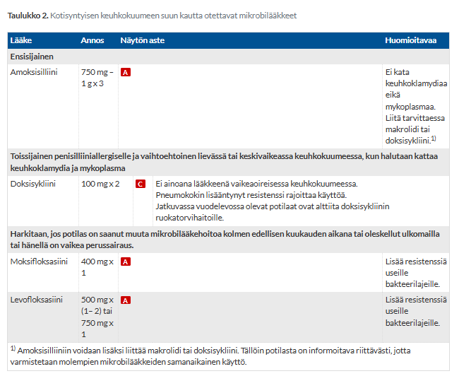
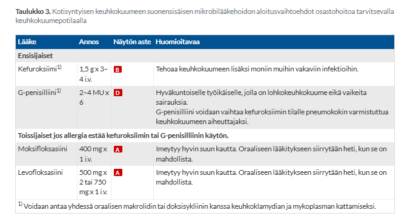
6.1.3 Malariaan
- liittyy aina kuumeilun lisäksi anemia
- liittyy kuumeen lisäksi valtaosalla anemiaa, leukopeniaa ja trombopeniaa
- liittyy yli puolella potilaista aivo-oireita
- liittyy yli puolella potilaista oliguria
bMalaria johtuu punasolujen ja maksasolujen infektoitumisesta Plasmodium -alkueläimillä (yleisin on P. falciparum), joita välittää Anopheles-hyttyset (yöhyttysiä).
Taudin tyypillisin piirre on horkkamainen kuume, joka johtuu punasolujen rupturoitumisesta (ja siten toksiinien vapautumisesta) Plasmodiumin elinsyklin aikana. Kuumesyklin aikataulu riippuu aiheuttavasta Plasmodium -alalajista. Plasmodium vivax ja ovale - tyypillisesti 48h välein syntyvä kuume. Plasmodium malariae - n. 72h välein. Yleisin P. falciparum (ja samoin knowlesi) aiheuttaa taas epäsäännöllistä kuumetta. Plasmodium falciparum (ja myös P. knowlesi) voi infektoida kaikenikäisiä punasoluja ja on osittain tästä syystä vakavin malariamuoto (vrt. vivax ja ovale, jotka infektoivat vain retikulosyyttejä ja malariae, joka infektoi vain kypsiä punasoluja).
Verisuonien sisällä tapahtuvan punasolujen rupturoitumisen lisäksi malariassa voidaan havaita myös ekstravaskulaarista hemolyysiä makrofagien tuhotessa infektoituneita punasoluja. Punasolujen yleinen tuhoutuminen eli hemolyysi niin intra- kuin ekstravaskulaarisesti siis selittää malariassa todettavan anemian.
Leukopenian ja trombopenian synty ei ole yhtä selkeä kuin anemian, mutta niidenkin toteaminen on siis hyvin tyypillistä malarialle.
a: Hb voi varsinkin alkuvaiheissa olla täysin normaali, koska ei ole ehtinyt tuhoutumaan paljoa punasoluja
c: Aivomalaria on Plasmodium falciparum -loisen aiheuttama erittäin vakava ja hengenvaarallinen komplikaatio, joka johtuu siitä, että P. falciparum aiheuttaa punasolujen “tahmaisuutta” ja johtaa verisuonien tukoksiin. Verisuonitukokset voivat johtaa monielinvaurioon (esim. munuaisten vajaatoiminta, keuhkoödeema, aivoinfarktit). Fataali falciparum-malaria johtuu juuri yleensä aivojen mikroverenkierron tukoksista (aivomalaria). Aivomalariaa kuitenkin esiintyy vain pienellä osalla kaikista malariapotilaista (yleensä muutamalla prosentilla hoitamattomista tai vaikeista tapauksista), ei suinkaan yli puolella.
d: Oliguria (vähävirtsaisuus) on merkki munuaisvauriosta, joka voi kehittyä vakavassa malariassa (jos malariaan liittyy elintoimintahäiriö, on kyseessä vakava malaria ja kuolleisuus on 10–20 %). Se on tyypillisintä P. falciparum -malarialle ja voi kehittyä muutamalla mekanismilla, jotka vaikuttavat tyypillisesti yhdessä. Aivomalariankin tyyliin mainittu punasolujen tahmaisuus ja mikrovaskulaaritukokset voivat häiritä munuaisten verenkiertoa ja johtaa paikalliseen hypoksiaan. Toisia vaurioita aiheuttavia tekijöitä ovat intravaskulaarinen hemolyysi, jossa vapautuu runsaasti hemoglobiinia verenkiertoon. Vapautuva hemi taas voi aiheuttaa suoraa oksidatiivista vauriota tubuluksiin. Kuumeilun, hikoilun, mahdollisen oksentelun yms aiheuttama dehydraatio voi myös aiheuttaa heikentyneen verenkierron kautta munuaisvauriota (prerenaalinen AKI).
6.1.4 Salmonellaenteriitissä
- tavallisin aiheuttaja on S. enteritidis
- tavallisin aiheuttaja on S. typhi
- ripuli on yleensä verinen
- itämisaika on yleensä 3-5vrk
aOn olemassa kaksi erilaista salmonellan aiheuttamaa tautia:
Salmonellaa aiheuttavia bakteereita ei ole ihmisen normaalissa mikrobistossa ja niiden toteaminen kertoo aina infektiosta tai kantajuudesta. Yleisimmät NTS-bakteerien serotyypit ovat S. enteritidis (yleisin maailmanlaajuisesti) ja S. typhimurium. S. enteritidis on maailmanlaajuisesti merkittävämpi, mutta tärkein Suomessa esiintyvä salmonellan serotyyppi on kuitenkin Salmonella Typhimurium. Tavallisimpia NTS-salmonellan lähteitä on kontaminoitunut ruoka (esim. huonosti kypsytetty liha, pastöroimaton maito, idut ja ulkomaiset tuoretuotteet, kuten salaatit). Suomen maataloudessa ja kotimaisissa elintarvikkeissa tavataan kuitenkin hyvin vähän salmonellaa. Tartunnan voi saada myös toisesta ihmisestä tai suoraan eläimistä (esim. lemmikeistä).
NTS-infektion diagnoosi perustuu ulosteviljelyyn tai ulosteen PCR (F-BaktNhO)-tutkimukseen. Viljelyyn kuluu 12–48 tuntia, kun taas PCR-testi tehdään nykyisin muutamassa tunnissa. Tämä testi ei kuitenkaan täysin korvaa viljelyä, koska se ei anna mikrobilääkeherkkyyksiä.
NTS:ää ei yleensä tarvitse hoitaa ja tauti paranee itsestään. Lievissä tai keskivaikeissa taudeissa ei yleensä suosita mikrobilääkehoitoa, sillä sen ei katsota merkittävästi lyhentävän taudin kestoa. Mikrobilääkkeet saattavat olla vahingoksi: voi ilmetä haittavaikutuksia, ja hoito voi pitkittää oireetonta kantajuutta. Mikrobilääkitystä kuitenkin tarvitaan jos taudinkuva on vakava (esim. raju ripulointi, huono yleistila, korkea kuuume, sairaalahoidon tarve, bakteremia tai sepsis). Ensisijainen antibioottivalinta on tällöin fluorokinoloni (siprofloksasiini; raskaana olevat ja salmonella-bakteremia hoidetaan keftriaksonilla).
b: S. typhi aiheuttaa lavantautia (ja S. paratyphi pikkulavantautia; eivät sinänsä eroa taudinkuvaltaan merkittävästi). Se on vakava yleisinfektio, ei niinkään pelkkä paikallinen ripulitauti (enteriitti). Lavantauti ja pikkulavantauti siis alkavat bakteremialla (vrt. NTS-infektiot, jotka alkavat gastroenteriitillä). Tyypillistä on n. 1–2 viikon kuluttua tartunnasta alkava päänsärky, kuume, sairaudentunne, vatsakipu, pahoinvointi ja joskus relatiivinen bradykardia (= pulssi matala suhteessa kuumeeseen (alle 100 vaikka kuumetta yli 39 °C)). Lavantaudissa n. 1/3 potilaista ilmenee tyypillisiä ohimeneviä rose spots -ihomuutoksia. Vatsaoireita ei ole kaikilla, tai ne voivat ilmaantua vasta myöhemmässä vaiheessa kipuna, ummetuksena, ripulina tai oksenteluna. Kliinisessä tutkimuksessa voidaan palpaatiossa havaita diffuusisti aristava vatsa sekä hepato- ja splenomegaliaa. S. typhi- tai S. paratyphi-infektioita tulee aina hoitaa. Hoito on tärkeää, koska Ensisijainen hoitovalinta on keftriaksoni 2 g x 1 iv; hoitoaika on 14vrk. Mikrobiologisesti varmennetuissa tapauksissa keftriaksonin rinnalle usein määrätään atsitromysiiniä tai siprofloksasiinia. Lääkärin on myös tehtävä tartuntatauti-ilmoitus. Jos resistentti kanta tai kyseessä empiirinen hoito septisessä infektiossa Kaakkois-Aasiasta tai Pakistanista saapuvalla, meropeneemi 1─2 g x 3 iv. Joskus hoidostakin riippumatta salmonella Typhi ja Paratyphi voivat aiheuttaa kroonisen, oireettoman infektion, jossa bakteerit kolonisoivat sappirakon. S. typhi ja paratyphi esiintyvät vain ihmisillä, muut salmonellat ovat zoonoottisia. Infektion voikin siis saada tyypillisesti syömällä tai juomalla infektoituneen ihmisen ulosteella kontaminoitunutta ruokaa/vettä (kts. Typhoid Mary).
On hyvä tietää, että Salmonella typhia vastaan on oraalinen elävä heikennetty rokote ja Vi-kapselipolysakkaridia sisältävä pistettävä rokote (On myös yhdistelmärokote: hepatiitti A -lavantautiyhdistelmärokote). Suun kautta annettavan lavantautirokotteen on osoitettu suojaavan osittain myös pikkulavantautia aiheuttavalta S. Paratyphi B:ltä, jota vastaan ei ole kehitetty omaa rokotetta (pistettävillä valmisteilla ei ole osoitettu olevan vastaavaa suojaa). Suomessa rokotetaan usein myös lavantautiin sairastuneen kanssa samassa taloudessa asuvat heti diagnoosin varmistuttua.
c: Salmonellaenteriitissä ripuliuloste on tyypillisesti vesimäistä tai vihertävää. Verta ulosteessa voi esiintyä vain poikkeuksellisen rajuissa, invasiivisissa infektioissa (kuten pienillä lapsilla tai vanhuksilla). Jos ripuli on säännönmukaisesti veristä ja limaista (punatauti), herää epäily ensisijaisesti mm. Shigellasta, Kampylobakteerista tai EHEC-infektiosta, ei perusmuotoisesta salmonellasta.
d: Salmonellan itämisaika on tyypillisesti 12–36 tuntia, mutta oireet voivat alkaa jo 6 tunnin kuluttua tartunnasta tai vasta 3 vuorokauden päästä6.1.5 Kefalosporiini soveltuu antibiootiksi, kun alustava vastaus veriviljelystä on
- gram-negatiivinen sauva
- gram-positiivinen sauva
- metisilliiniresistentti S. aureus
- listeria
aLöydös gram-negatiivinen sauva viittaa vahvasti enterobakteereihin, kuten esim. Escherichia coliin tai Klebsiellaan, jotka ovat tyypillisiä urosepsiksen tai vatsan alueen infektioiden aiheuttajia. Kefalosporiinit (erityisesti 2. polven kefuroksiimi) ovat laajahkon gram-negatiivisen tehonsa vuoksi ensisijaisia empiirisiä antibiootteja ennen taudinaiheuttajan tai herkkyyksien vastaamista.
b ja d: Tärkein gram-positiivinen sauva veriviljelyssä on Listeria monocytogenes (listeriasepsis tai -aivokalvontulehdus). Mikään kefalosporiini ei tehoa listeriaan. Jos veriviljelyssä kasvaa listeria, ensisijainen hoito on usein ampisilliini.
c: MRSA on vastustuskykyinen tavallisille beetalaktaameille (tosin 5. sukupolven kefalosporiini, kuten keftaroliini, kattaa MRSAn). MRSA-bakteremiassa usein vankomysiini on toimiva vaihtoehto. Infektiolääkärin konsultaatio aina tarpeellinen kuitenkin.6.1.6 HIV-infektion estämiseksi
- tarvitaan kuukauden estolääkitys suojaamattoman seksikontaktin jälkeen, vaikka HIV-positiivisella partnerilla on jatkuvassa käytössä ja pitkäaikaisessa seurannassa todistetusti toimiva lääkitys
- voidaan tietyissä tapauksissa suositella myös ennen altistusta otettavaa estolääkitystä
- ei tarvita enää estolääkitystä terveydenhuollon neulatapaturmassa jos HIV-positiivisen lähdepotilaan HIV-lääkitys tiedetään hyvin toimivaksi
- ei nykyään tarvita mitään aktiivisia toimia, koska lääkkeet ovat niin hyviä
bTätä kutsutaan PrEP-lääkitykseksi (pre-exposure prophylaxis). Sitä voidaan suositella ja määrätä henkilöille, joilla on lääketieteellisesti arvioituna suuri riski saada HIV-tartunta (esim. kundeilla, joilla useita seksikumppaneita ilman kondomia tai jos henkilöllä on HIV-pos kumppani, joka ei saa antiretroviraalista hoitoa).
Suomessa prep-hoito on julkisessa terveydenhuollossa käyttäjilleen maksutonta, kun prep-hoidon kriteerit täyttyvät. Joillakin paikkakunnilla prep-hoidon arvioon tarvitaan lääkärin lähete, kun taas joillain alueilla prep-arvioon pääsee ilman lähetettä ottamalla itse yhteyttä.
a: Jos HIV+:lla potilaalla on dokumentoidusti mittaamaton virusmäärä, PEP:ia (post-exposure prophylaxis) ei enää suositella! Tästä on vakuuttava tutkimusnäyttö.
c: Neulatapaturmassa PEP suositellaan edelleen, jos lähde on HIV+
d: Vaikka HIV-lääkkeet ovat nykyään erittäin tehokkaita ja pitävät viruksen kurissa, aktiivisia toimia (kuten kondomin käyttöä, PrEP/PEP-lääkityksiä, puhtaiden pistovälineiden käyttöä ja säännöllistä testausta) tarvitaan edelleen tartuntojen ennaltaehkäisemiseksi. HIV on yhä parantamaton, elinikäinen infektio.6.1.7 60-vuotiaalla aiemmin suhteellisen terveellä potilaalla on esiintynyt jo toista viikkoa vaihtelevaa kuumeilua ad 38.5 ilman respiratorisia oireita. Parin päivän aikana alkanut kuitenkin tulla hengenahdistusoireita. Keuhkojen auskultaatiossa kuuluu staasirahinaa. Sydämen auskultaatiossa systolinen sivuääni, jollaisesta potilaalla ei aiempaa tietoa. RR 100/40, p 120/min. Mikä on lähinnä oikein ajatusketju?
- herää vahva epäily endokardiitista ja sen pohjalta kehittyneestä sydämen vajaatoiminnasta
- herää vahva epäily perikardiitista ja kongestiivisesta sydämen vajaatoiminnasta
- herää vahva epäily septisestä sokista, joka respiratoristen oireiden puuttuessa todennäköisimmin urosepsis
- kyseessä todennäköisimmin pneumokokkipneumonia
aPitkittynyt kuumeilu ja sen yhteydessä uusi sivuääni. Uusi tai voimistunut sivuääni kuumeen yhteydessä tulisi herättää aina epäilyn endokardiitista. Läppiin kasvavat vegetaatiot voivat aiheuttaa vuotoa ja/tai turbulenttia virtausta ja nämä voivat kuulua sivuäänenä. Kun läppä alkaa vuotaa äkillisesti, perfuusio eteenpäin heikkenee (akuutti sydämen vajaatoiminta) ja verta voi patoutua keuhkoihin, mikä aiheuttaa keuhkopöhön (ilmenee hengenahdistuksena ja auskultaatiossa kuuluvina nesteen aiheuttamina rahinoina).
Erityisesti potilaan matala diastolinen paine (40 mmHg) ja suhteessa isompi systolinen paine (korkea pulssipaine) viittaa isoon aorttaläpän vuotoon. Vuoto takaisinpäin siis laskee diastolista painetta huomattavasti. Korkea syke on elimistön kompensaatiomekanismi sydämen romahtaneeseen iskutilavuuteen.
b: Perikardiitti aiheuttaa tyypillisesti asennosta riippuvaista rintakipua ja auskultaatiossa hankausääntä, ei uutta systolista sivuääntä.
c: Vaikka potilas on hypotensiivinen ja takykardinen (mikä voi liittyä sepsikseen), uusi sydämen sivuääni yhdistettynä keuhkojen staasirahinoihin ei selity urosepsiksellä.
d: Potilaalla on jo toista viikkoa kestänyt kuumeilu nimenomaan ilman selkeitä respiratorisia (hengitystie-) oireita (tosin nyt viime päivinä hengenahdistusta). Pneumokokkipneumoniassa hengenahdistus ja hengitysoireet alkavat yleensä heti ensimmäisinä päivinä kuumeen noustessa. Lisäksi keuhkokuume ei suoraan yhtä vahvasti selitä uutta sydämen sivuääntä.6.1.8 ESBL E. colin kantajaepäilyssä VTI-oireisella voimakkaan septisellä potilaalla
- aloitetaan karbapeneemi 10vrk ajaksi riippumatta veriviljelylöydöksistä
- aloitetaan trimetopriimi ja vaihdetaan viljelylöydöksen perusteella tarvittaessa karbapeneemiin
- aloitetaan karbapeneemi, joka vaihdetaan kefuroksiimiksi, jos virtsaviljelyssä kasvaakin tavallinen E. coli, vaikka perineum-näytteessä löytyisikin ESBL E. coli
- aloitetaan kefuroksiimi, jonka iv-hoidon pituus tässä tapauksessa olisi 14vrk
cESBL-kantajuutta ei oteta automaattisesti huomioon aloitushoidossa, vaan infektion vakavuusaste on ratkaisevaa empiirisen ab valinnassa. Karbapeneemiä käytetään, jos potilas on selkeästi huonokuntoinen ja altistavia tekijöitä, kuten aikaisempi ESBL-kannan eristys (ja täten tälle potilaalle aloitetaan ESBL:n kattava hoito), edeltävä matkailu Euroopan ulkopuolella tai edeltävä fluorokinolonien/beetalaktaamien käyttö. Empiirinen hoito vaihdetaan myöhemmin kapeakirjoisemmaksi viljelytuloksen mukaan.
6.1.9 Märkäruven kliiniseen kuvaan ei kuulu
- rakkulat
- vesikellot
- mustat nekroottiset haavaumat
- kellertävät karstat
cMärkärupi eli impetigo on useimmiten S. aureus- (yleisin, n. 80%) tai S. pyogenes -infektiosta (n. 10%) tai molemmista (n. 10%) johtuva ihoinfektio.
Impetigoa on kolmea tyyppiä: rakkulaton (non-bullous), rakkulainen (bullous) ja ektyyma. Rakkulainen muoto johtuu lähes yksinomaan S. aureus -infektioista (eksfoliatiivinen toksiini mahdollistaa bullien muodostumisen). Rakkulattoman märkäruven tyyppipaikat ovat kasvot ja yläraajat. Rakkulaisen taas enemmänkin keskivartalo. Ektyyman taas alaraajat.
Ektyyma eroaa toisista muodoista merkittävästi on syvempi vakavampi muoto. Siinä voidaan kyllä nähdä nopeasti eteneviä iholeesioita, jotka kehittyvät bullien ja pustuloiden kautta ytimeltään mustiksi ja nekroottisiksi alueiksi. Periaatteessa siis mustat nekroottiset haavaumat voivat olla märkäruven löydös, mutta vain tässä harvinaisemmassa ektyyma-tyypissä.
Impetigo on hyvin tarttuva ja tarttuu helposti kosketuksessa. Diagnosoidaan kliinisen kuvan perusteella; bakteeriviljely otetaan tyypillisesti vasta jos hoitovaste on huono.
Hoitona pieni-alaisissa infektioissa voi olla paikallinen fusidiinihappo ja rupien liuottelu (1-2vk). Rupien liottelu on tärkeää, koska niiden alla bakteeri voi selvitä hengissä. Laaja-alaisena (>6cm) tarvitaan paikallisen hoidon lisäksi oraalinen antibioottihoito (flukloksasilliini tai kefaleksiini), joka kestää 7-10vrk. Hiusten tai parran alueen impetigon ensisijainen hoito on laajuudesta riippumatta oraalinen antibioottihoito (flukloksasilliini tai kefaleksiini), koska bakteerit pääsevät karvatuppeja pitkin syvemmälle ihoon, jolloin paikallinen hoito ei riitä näille alueille. Jos potilaalla on ekseema (ekseema altistaa uusiutumiselle vaurioittaessaan ihoa -> myös ekseema tulee hoitaa samalla), niin käytetään sisäisen mikrobilääkkeen kanssa paikallista glukokortikoidi-antimikrobiyhdistelmää (esim. Fucicort), kunnes iho on siisti.
a ja b: Kuuluvat ns. rakkulaisen märkäruven kuvaan. Siinä stafylokokin erittämä toksiini irrottaa ihon pintakerrosta, jolloin iholle nousee kirkas- tai sameanesteisiä, helposti rikkoutuvia vesikelloja ja löysiä rakkuloita.
d: Ei-rakkulaisen märkäruven tyypillisin ja klassisin tunnusmerkki. Pienet rakkulat rikkoutuvat nopeasti, ja niiden tilalle erittyy hunajankeltaista, kuivuvaa eritettä, joka muodostaa iholle tyypillisiä kellertäviä karstoja tai rupea.
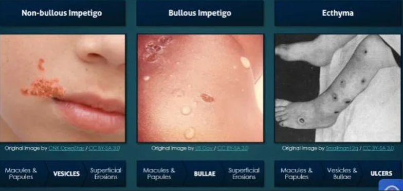
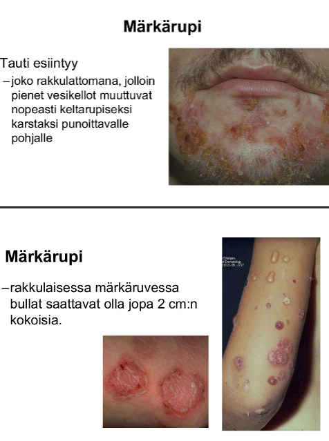
6.1.10 Akuutin keuhkoputkitulehduksen hoito
- ensisijaisesti amoksisilliini
- ensisijaisesti makrolidi tai doksisykliini
- antibioottihoito tapauskohtaisesti, jos potilaalla vaikeita yleissairauksia
- ei hoideta koskaan antibiootilla, koska se on virustauti
cAkuutti keuhkoputkitulehdus (bronkiitti) on perusterveellä ihmisellä useimmiten (yli 90 % tapauksista) viruksen (yleisimpiä mm. rinovirukset, RSV, koronavirus, parainfluenssa, adenovirus) aiheuttama itsestään paraneva tauti, johon antibiooteista ei ole hyötyä. Oireenmukainen hoito on siis ensisijaista.
Antibioottihoitoa voidaan harkita tapauskohtaisesti, jos potilaalla on vakavia perussairauksia, jotka heikentävät merkittävästi hänen puolustuskykyään (esim. immunosuppressoitu potilas) tai keuhkokapasiteettiaan. Tällaisista yleisin esimerkki on keuhkoahtaumatauti (COPD), jolloin voi mahdollisesti harkita mikrobilääkehoitoa, jos kyseessä arvioidaan olevan keuhkoahtaumataudin pahenemisvaihe.6.1.11 MDR-tuberkuloosissa on resistenssi
- yhdelle tuberkuloosilääkkeelle
- mille tahansa kahdelle tuberkuloosilääkkeelle
- isoniatsidille ja rifampisiinille
- fluorokinolonille ja jollekin toiselle lääkkeelle
cMDR-tuberkuloosi (multidrug resistant tuberculosis) viittaa Mycobacterium tuberculosiksen tyyppiin, joka on resistentti rifampisiinia ja isoniatsidia vastaan. Jos tautimuoto on vastuskykyinen myös fluorokinoloneille, on kyseessä pre-XDR-tuberkuloosi. XDR (engl. extensively drug resistant) on kyseessä, jos tuberkuloosi on vastuskykyinen edellä mainittujen lääkkeiden lisäksi myös bedakiliinille ja / tai linetsolidille.
MDR-tuberkuloosia on joka puolella maailmaa. Vuosittain noin puoli miljoonaa ihmistä sairastuu maailmassa. Sairastuneista puolet asuu Intian, Kiinan ja Venäjän federaation alueella. Suomessa MDR-tuberkuloosi on harvinainen, täällä todetaan vuosittain vain yksittäisiä tapauksia.
MDR-tuberkuloosia voidaan hoitaa, vaikka tavalliset tuberkuloosilääkkeet eivät toimikaan. Hoito on pitkä, mutta suurin osa potilaista paranee. Aluksi lääkehoitoon kuuluu vähintään 5 eri lääkettä ja lopullinen lääkeyhdistelmä selviää, kun on saatu tietää eri lääkkeiden teho. Tämä vie yleensä useita viikkoja. Valittuun lääkeyhdistelmään vaikuttavat myös muut sairaudet, lääkitykset sekä tuberkuloositaudin laajuus ja sijainti.
Yleensä siis normaalin TB:n hoidossa standardilääkeyhdistelmänä on RIPE-lääkitys eli rifampisiini (RIF) ja isoniatsidi (INH) 6 kk:n ajan ja lisäksi pyratsiiniamidi (PZA) ja etambutoli (EMB) 2 ensimmäisen kk:n ajan. Tuberkuloosihoito aloitetaan ja sitä seurataan erikoissairaanhoidossa. Valvottu avohoito toteutetaan paikallisista käytännöistä riippuen joko erikoissairaanhoidossa tai perusterveydenhuollossa yhteistyössä erikoissairaanhoidon kanssa. Kaikille potilaille ohjelmoidaan valvottu lääkehoito. Yleisvaarallisessa tartuntataudissa hoito on maksutonta ja pakollista. Potilas ottaa (nielee) lääkkeensä hoitajan valvonnassa tai videovalvotusti. Potilaalle kerrotaan, että valvottu lääkehoito on osa tuberkuloosin hyvää hoitoa, jolla tuetaan potilasta, eikä epäily potilaan luotettavuudesta.
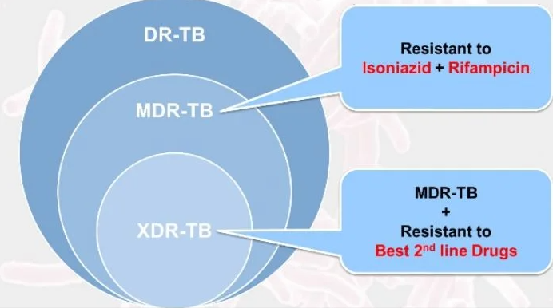
6.1.12 Raudanpuuteanemiaan kuuluu seuraavista tyypillisimmin
- oireettomuus
- veren hemoglobiinin pysyminen kohtalaisen korkealla
- ulosteet ovat olleet mustia
- nielemisvaikeus
c (/a)Raudanpuutteen yleisimmät aiheuttajat kehittyneissä maissa on runsasvuotoiset kuukautiset, GI-kanavan verenvuodot ja malabsorptiosairaudet (esim. keliakia). GI-verenvuodot ylemmästä ruoansulatuskanavasta (Treitzin ligamentin yläpuolella eli käytännössä duodenumista proksimaalisesti) voi ilmentyä mustina ulosteina eli meleenana (veri ehtii hajota ja värjätä ulosteet mustaksi; vrt. alemman ruoansulatuskanavan vuodot, jotka ovat enemmänkin punaisia).
a: Raudanpuuteanemian oireet riippuvat anemian syvyydestä ja kestosta sekä muusta terveydentilasta. Hitaasti kehittynyt lievä anemia voi olla suhteellisen oireeton. Myös statuslöydökset ovat usein niukat, vaikka anemia olisi merkittävä, koska elimistö tottuu hitaasti kehittyvään anemiaan. Tämän takia myös a voisi olla sopiva vastaus; mallivastauksissa kuitenkin c on merkattu oikeaksi.
b: Anemiassa Hb on laskenut määritelmällisesti
d: Nielemisvaikeus (dysfagia) voi liittyä raudanpuuteanemiaan osana mm. niin sanottua Plummer–Vinsonin oireyhtymää, jossa esiintyy raudanpuutetta, nielemisvaikeutta ja ruokatorven limakalvomuutoksia. Ei kuitenkaan ole tyypillisimpiä löydöksiä6.1.13 Millä aloitat ITP:n hoidon?
- aspiriinilla
- kortikosteroidilla
- suonensisäisellä immunoglobuliinilla
- trombosyyttikasvutekijällä
bITP (immunologinen trombosytopenia, immunologinen/idipaattinen trombosytopeninen purppura) on autoimmuunisairaus, joka ilmenee trombosytopeniana eli verihiutaleiden määrän vähäisyytenä ja vaihtelevan vahvuisena vuototaipumuksena.
ITP:ssä jostain syystä (usein esim. virusinfektion jälkeen; muita aiheuttajia ovat mm. antibiootit, KLL, HIV, HCV, SLE) pernan plasmasolut tuottavat IgG-vasta-aineita trombosyyttien antigeenejä (esim. GPIIb/IIIa) vastaan. Nämä vasta-aineet tarttuvat trombosyytteihin, mikä ohjaa pernan makrofagit tuhoamaan merkityt trombosyytit -> trombosytopenia.
ITP:ssä verihiutaleet laskevat alle määrän 100 xe9/l. ITP jaetaan trombosytopenian keston mukaan akuuttiin (alle kolme kuukautta), persistoivaan (3-12 kuukautta) ja krooniseen (yli 12 kuukautta) muotoon. ITP kroonistuu selvästi useammin aikuisilla kuin lapsilla (noin 10%:lla aikuispotilaista). Lapsilla ITP on tyypillisesti itsestään rajoittuva akuutti tautimuoto (alle 3kk, tyypillisesti pari viikkoa).
Yleisimmät oireet ovat väsymys ja vuotoriski. Vuotoriski on verihiutaletyyppimäinen eli havaitaan pinnallisempia verenvuotoja (petekkiat, purppurat, ekkymoosit).
Immunologisen trombosytopenian (ITP) hoidoksi yleensä riittää seuranta, kun trombosyyttimäärä on yli 30xE9/l. Hoidon suuntaviivat päättää hematologi tai sisätautilääkäri. Jos B-Trom on todella matala, käytetään yleensä ensisijaisesti deksametasonia 40 mg/vrk 4 vrk:n ajan. Vasteen saavuttamisen jälkeen annosta pienennetään mahdollisimman pieneksi; tavoitteena on yleensä B-Trom > 50 × 109/l ja vuoto-oireeton potilas; trombosyyttien normaalistuminen ei ole tarpeen, vaan riittävä taso määritellään yksilöllisesti. Mikäli ITP:n hoidossa glukokortikoidit ovat tehottomia tai vasteen ylläpitämiseksi joudutaan käyttämään jatkuvasti suuria annoksia, suositellaan toisen linjan hoitoja, joita ovat mm. trombopoietiinireseptoriagonistit (TPO-RA, verihiutalekasvutekijöitä), rituksimabi ja pernan poisto.
Mikäli ITP-potilas vuotaa, niin yleensä tulee antaa trombosyyttisiirto, jota ennen usein annetaan IVIG (iv-immunoglobuliinia) ja iv glukokortikoidia siirtovasteen parantamiseksi
6.1.14 Myelooman riskiarvossa käytetään kahden tutkimuksen kombinaatiota:
- seerumin beetta-2-mikroglobuliinia ja albumiinia
- seerumin beetta-2-mikroglobuliinia ja kreatiniinia
- seerumin kalsiumia ja hemoglobiinipitoisuutta
- hemoglobiinipitoisuutta ja M-komponentin määrää
aNykyhoidot ovat kaksinkertaistaneet myeloomapotilaan odotettavissa olevan eliniän 7–8 vuoteen. Yksittäisten potilaiden ennuste on kuitenkin hyvin vaihteleva. Pienen riskin myeloomapotilailla on yli 50 %:n mahdollisuus elää yli kymmenen vuotta, kun taas suuren riskin potilaiden keskimääräinen elinajan odote on vain 2–3 vuotta.
Myelooman ISS-riskiluokitus (International Staging System) ja sen uusittu versio R-ISS (R = revised) muodostavat myelooman riskinarvion kultaisen standardin. Ne jakavat myeloomapotilaat kolmeen ennusteeltaan eroavaan ryhmään tautimassaa heijastavien yksinkertaisten verikokeiden avulla. R-ISS-luokitus huomioi lisäksi suuren riskin sytogeneettiset muutokset. Kansainvälisen myeloomaryhmän (International Myeloma Working Group, IMWG) laatima riskiluokitus pohjautuu ISSluokitukseen, ottaa huomioon potilaan iän ja määrittelee suuren riskin sytogeneettiset muutokset osittain eri tavoin (13). Nämä riskiluokitukset esitetään alla olevassa taulukossa.
Myelooman riskiluokka ei määräydy pelkästään genomisten muutosten tai suuren tautimassan perusteella. Suuren riskin merkkejä ovat myös myeloomasolukon esiintyminen luuytimen ulkopuolella, plasmasytoomina tai veressä plasmasoluleukemiana sekä puutteellinen tai nopeasti ohi menevä hoitovaste. Potilaan kannalta kaikki tehokkaiden hoitojen käyttöä rajoittavat potilaskohtaiset tekijät, kuten iäkkyys, huono toimintakyky ja muut sairaudet, johtavat suuren riskin tautiin.
Beeta-2-mikroglobuliini on kevytketjukomponentti, joka löytyy kaikkien tumallisten solujen pinnalta. Koska myeloomasolut erittävät tai kerivät tätä proteiinia suoraan vereen, niin suuret määrät sitä kuvaavat aktiivisen syöpäsolukon määrää.
Albumiinin suhteen taas matala arvo viittaa huonoon prognoosiin. Se voi tietysti indikoida heikkoa ravintoa, mutta on hyvä muistaa, että albumiini on negatiivinen akuutin faasin proteiini. Se tarkoittaa, että sen määrät laskevat tulehduksessa. Aktiivisessa myeloomassa syöpäsolut vapauttavat inflammatorisia sytokiineja (kuten IL-6), joka suppressoi maksan kykyä tuottaa albumiinia (ja taas tehostaa positiivisten akuutin faasien proteiinien tuotantoa).
b, c ja d: Muut vaihtoehdoissa mainitut kokeet (kuten kalsium, kreatiniini ja hemoglobiini) ovat kyllä tärkeitä myelooman diagnostiikassa ja elinvaurioiden (ns. CRAB-oireet) arvioinnissa, mutta itse ISS-riskiluokitusjärjestelmä nojaa beetta-2-mikroglobuliiniin ja albumiiniin.
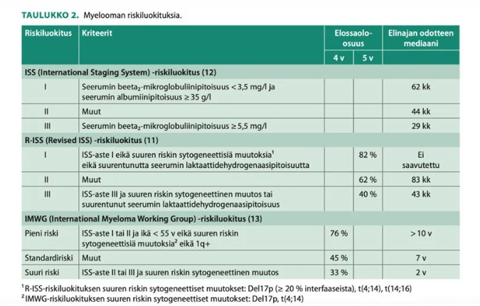
6.1.15 30-vuotiaan aplastista anemiaa sairastavan potilaan ensilinjan hoito on
- kortikosteroidihoito
- muu immunosuppressiivinen hoito (esim. syklosporiini)
- kasvutekijähoidot
- allogeeninen luuytimensiirto
dAplastinen anemia johtuu vauriosta hematopoieettisiin kantasoluihin, mikä johtaa pansytopeniaan (anemia, trombosytopenia ja leukopenia) eli kyseessä ei ole vain anemia, vaan muidenkin verisolujen tuotannon puutos. Yleensä aiheuttaja on idiopaattinen; mahdollisesti autoimmuuniperäinen. Joskus se voi johtua myös säteilystä tai lääkkeistä (esim. kloramfenikoli, antimetaboliitit, alkyloivat tekijät), joskus myös virusinfektioista (esim. EBV, HIV, hepatiitti).
Aplastisessa anemiassa tärkeä diagnostinen tutkimus on luuydinbiopsia (imunäytteen perusteella ei voida luotettavasti arvioida luuytimen solukkuutta), jossa havaitaan rasvainen ja hyposellulaarinen luuydin.
Aplastista anemiaa hoidetaan, jos se aiheuttaa punasolu- tai trombosyyttisiirtoja vaativan sytopenian tai neutropeniasta johtuvia infektioita. Vakiintuneita hoito-ohjeita ei ole, mutta immunosuppressiivinen lääkitys on tyyppillistä. Anemiaan voidaan kokeilla erytropoietiinia, trombosytopeniaan trombopoietiinireseptorin agonistia ja neutropeniaan valkosolukasvutekijää. Androgeenejakin voidaan harkita, samoin täysimittaista immunosuppressiivista hoitoa. Nuorilla potilailla (<40v.), joilla on vaikea aplastinen anemia, ensilinjan hoito on allogeeninen kantasolusiirto.
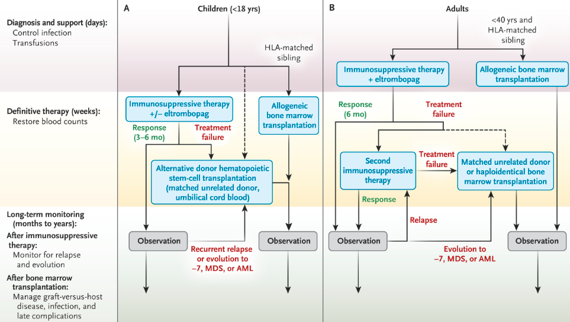
6.1.16 Mikä on paras laboratoriokoe osoittamaan B-12-vitamiinin puutosta?
- seerumin totaali-B12
- seerumin transkobalamiiniin sitoutunut B12
- seerumin haptokorriiniin sitoutunut B12
- seerumin homokysteiini
bB12-vitamiinin (kobalamiinin) imeytymisprosessi:
- B12-vitamiinin tyypillinen labraselvittely on B12-TC2 eli transkobalamiini 2:een sitoutunut B12, koska halutaan mitata aktiivinen B12.
a: Kokonais-B12-vitamiinin mittaus on epätarkempi, koska suurin osa veressä olevasta B12-vitamiinista on sitoutuneena inaktiiviseen haptokorriiniin. Tämän vuoksi kokonaispitoisuus voi näyttää normaalilta, vaikka potilaalla olisi jo toiminnallinen vitamiininpuute.
d: Homokysteiini (S-Hcyst) voi kyllä osoittaa B12-vitamiinin puutetta, koska B12-vitamiinin (kobalamiinin) puutokselle on tyypillistä ↑ homokysteiinitasot, tosin löydös ei ole juuri B12-puutteelle spesifinen. Plasman homokysteiinipitoisuus suurenee B12-vitamiinin, mutta myös folaatin puutteessa, kun homokysteiinin metyloituminen metioniiniksi estyy (hyvä tiedostaa, että folaatin tai B12-vitamiinin puutteen aiheuttama homokysteinemia voi aiheuttaa mm. trombooseja, koska homokysteiini vaurioittaa endoteeliä).
Homokysteiinimäärityksellä ei voida siten erottaa näiden vitamiinien puutetta toisistaan, mutta mittauksen käyttökelpoisuutta lisää se, että pitoisuuden voidaan osoittaa alenevan asianmukaisen vitamiinikorvauksen jälkeen.Erottavana tekijänä toimii metyylimalonaatti (MMA), joka on koholla vain B12-vitamiinin puutteessa ja normaali folaatin puutteessa (B12 auttaa muuttamaan metyylimalonihappoa sukkinyyli-CoA:ksi). Metaboliittien (metyylimalonaatti, homokysteeini) mittaaminen auttaa epäselvissä tilanteissa, kun selvitellään megaloblastista anemiaa; useimmiten kuitenkin diagnostiikka onnistuu ilman näiden mittaamista. Merkittävä folaatin tai B12-vitamiinin puute
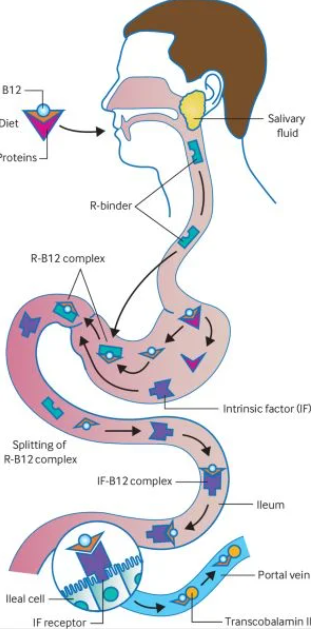
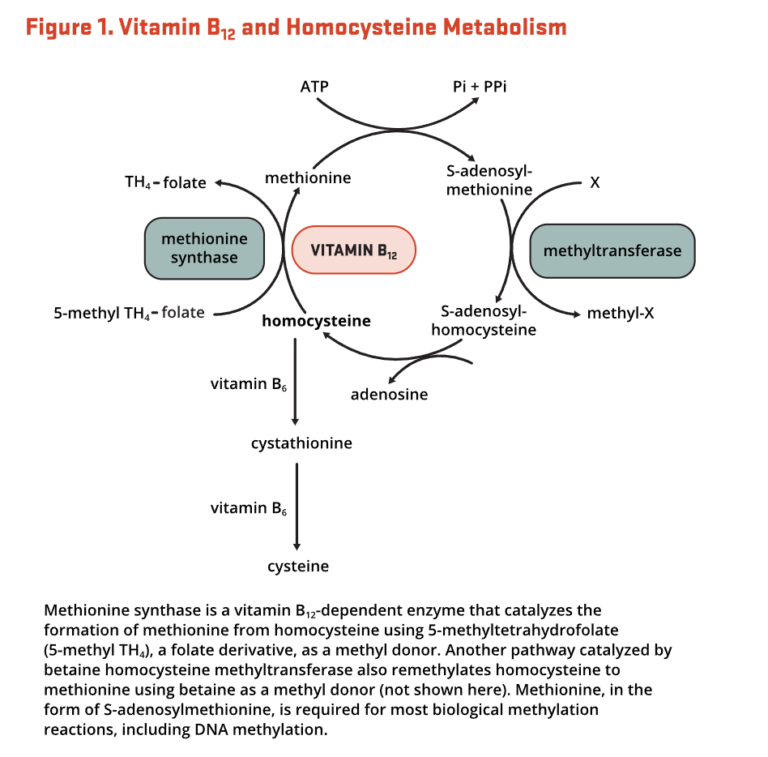
6.1.17 Kroonisen lymfaattisen leukemian diagnoosiin tarvitaan
- veren tai luuytimen virtaussytometria
- imusolmukebiopsia
- kromosomien G-raitatutkimus
- geenitutkimus
aKLL:n voi diagnosoida suoraan verinäytteestä. KLL:n diagnostiset kriteerit:
b: SLL eli pienisoluinen lymfosyyttinen lymfooma on käytännössä sama tauti kuin KLL, mutta SLL:ssä B-lymfosytoosi on vähäisempää ja neoplastiset solut affisioivat enemmän imusolmukkeita, mikä johtaa yleistyneeseen lymfadenopatiaan. Imusolmukebiopsiaa voidaan tarvita SLL:n osoittamiseen imusolmukkeissa
c ja d: Tärkeitä taudin ennusteen ja hoidon valinnan kannalta, mutta niitä ei tarvita varsinaisen diagnoosin asettamiseen6.1.18 Mikrotromboosien aiheuttamat kipukriisit ovat tyypillisiä
- talassemiassa
- myeloomassa
- sirppisoluanemiassa
- akuutissa leukemiassa
cSirppisolutaudissa potilaalla on kaksi epänormaalia hemoglobiinin beetaglobuliinigeeniä, minkä takia tuotetaan runsaasti poikkeavaa hemoglobiinia - ns. HbS. Epänormaali hemoglobiini S on siitä funktioltaan erilainen, että sen altistuessa deoksygenoitunutta hemoglobiinin muotoa suosivalle ympäristölle (esim. rankka urheilu, korkea ilmanala, asidoosi, infektio, dehydraatio; nämä tilat kannustavat hapen irtautumista hemoglobiinista kudokseen) se polymerisoituu ja muodostaa neulamaisen rakenteen. Pitkät polymeerit venyttävät ja vääntävät punasolua -> sirppiytyminen. Sirpin muotoisiksi vääristyneet solut voivat tukkia pieniä verisuonia ja kapillaareja, koska ne takertuvat toisiinsa ja verisuonien seinämiin helposti eivätkä ne liiku hyvin ahtaiden paikkojen läpi.
Verisuonitukosten aiheuttamat infarktit esim. käsien ja jalkojen luissa sirppisoluanemiassa aiheuttavat daktyliittiä (kivulias käsien ja jalkojen turpoaminen). Tämä on yleisin sirppisoluanemiakriisin merkki lapsilla. Tukokset voivat myös ilemntyä mm. keuhkoissa esim. rintakipuna, takypneana, kuumeena ja kuvantamisessa uusina keuhkoinfiltraatteina; ns. keuhkokriisi eli acute chest syndrome usein keuhkokuumeen laukaisemana.
Sirppisolutauti voi myös aiheuttaa mikrohematuriaa johtuen munuaisten medullaarisista infarkteista. Ehkä yksi tunnetuimmista komplikaatioista on autosplenektomia eli pernan tuhoutuminen johtuen toistuvista pernan mikroinfarkteista. Ilmenee ruskeana, kutistuneena ja fibroottisena pernana (ruskea väri johtuu hermosideriinin kertymisestä). Sirppisoluanemiapotilaat ovat täten perustautinsa vuoksi usein hyposplenisiä ja siksi infektioherkkiä varsinkin kapselillisille organismeille, kuten Streptococcus pneumoniae, Haemophilus influenzae, Neisseria meningitidis ja Salmonella (SHiNS).
a: Perinnölliset hemoglobiinipoikkeavuudet eli hemoglobinopatiat jaotellaan talassemioihin ja hemoglobiinin rakenteellisiin poikkeavuuksiin (kuten juuri sirppisoluanemiaan). Talassemioissa hemoglobiinimolekyylin rakenteeltaan normaalien globiiniketjujen tuotanto on vähentynyt. Se ei tyypillisesti aiheuta mikrotrombooseja, vaikka aiheuttaakin mikrosytääristä anemiaa.
b: Myeloomassa kivut johtuvat pääasiassa luustovaurioista (osteolyysi), joita pahanlaatuiset plasmasolut aiheuttavat
d: Kivut voivat liittyä luuytimen täyttymiseen syöpäsoluilla, mutta mikrotromboosien aiheuttamat iskeemiset kipukriisit eivät ole sille tyypillisiä6.1.19 Kun potilaalla todetaan eteisvärinä, mikä seuraavista EI ole totta
- antikoagulaatiohoidolla voidaan vaikuttaa potilaan ennusteeseen vähentämällä keuhkoembolisia komplikaatioita, jos CHADS-VASC riskipisteitä on 1 tai enemmän
- iäkkään potilaan pitäminen sinusrytmissä toistuvilla kardioversioilla ja estolääkityksillä parantaa potilaan ennustetta
- kardioversio voidaan tehdä ilman edeltävää antikoagulaatiohoitoa, jos eteisvärinä on kestänyt <48h
- painoa pudottamalla voidaan vähentää eteisvärinän ilmaantuvuutta ylipainoisilla potilailla
bRytminkäännöstä ei tehdä automaattisesti vain siksi, että se on mahdollista. Jos potilas on iäkäs, vähäoireinen tai oireeton ja eteisvärinä on persistoiva (jatkuva eli kesto >7vrk), pelkkä sykkeenhallinta on yleensä täysin riittävä ja usein ensisijainen hoitolinja. Ei ole yksiselitteistä, milloin valitaan sykkeenhallinta ja hyväksytään eteisvärinä ja milloin yritetään pysyä sinusrytmissä toistuvillakin rytminsiirroilla. Voi kuitenkin yleisesti ajatella, että vähäoireiset ja iäkkäät monisairaat (iäkäs tarkoittaa >65v ja lieväoireinen = EHRA 1-2) voi pitää eteisvärinässä, kunhan vain AK-hoidosta ja järkevästä kammiovasteesta huolehditaan. Rytminkäännökseen ryhdytään yleensä silloin, kun potilas jää sykkeenhallinnasta huolimatta selvästi oireiseksi tai jos kyseessä on nuori potilas, jolla rytmihäiriö kuormittaa sydäntä.
Jos päädytään pysyvään eteisvärinään ja sykkeenhallintaan, potilaalle on hyvä kertoa hoitomyöntyvyyden parantamiseksi, että ennuste on lieväoireisilla potilailla (EHRA 1–2) sykkeenhallinnan aikana yhtä hyvä kuin lääkkeellisen rytminhallinnan aikana. Suuret kliiniset monikeskustutkimukset (kuten AFFIRM-tutkimus) ovat osoittaneet, että iäkkäämmillä ja muuten hyväkuntoisilla potilailla pelkkä kammiovasteen hallitseminen (sykekontrolli) tarjoaa yhtä hyvän ennusteen (kuolleisuus ja aivoinfarktiriski ovat samat) kuin aggressiivinen sinusrytmiin pyrkiminen (rytmikontrolli estolääkityksellä ja toistuvilla kännöillä).
a: Antikoagulaatiohoito (suorat oraaliset antikoagulantit tai varfariini) estää tehokkaasti hyytymien muodostumista eteisessä ja siten vähentää tromboembolisia komplikaatioita (ensisijaisesti aivoinfarktia ja systeemistä emboliaa) silloin, kun tukosriski (CHA₂DS₂-VASc-pisteet) on kohonnut. Keuhkoembolia on tyypillisesti laskimotukoksen komplikaatio, mutta antikoagulaatiohoito kylläkin suojaa potilasta niiltäkin. CHADSVA-pisteytystä ei vain käytetä keuhkoembolisten ongelmien riskin laskemisessa, vaan vain eteisvärinän aiheuttamien embolioiden riskissä.
c: Periaatteessa väite on totta, mutta ei ole näin yksiselitteinen. Kts. ohjeet alla olevasta algoritmista.
d: Ylipaino on merkittävä eteisvärinän itsenäinen riskitekijä. Tutkimusten mukaan merkittävä ja pysyvä painonpudotus vähentää eteisvärinäkohtausten uusiutumista, lievittää oireita ja voi jopa suotuisasti muuttaa sydämen rakennetta (varsinkin eteisten venytystä ja fibroosia)

6.1.20 29-vuotiaalla todetaan kapeakompleksinen takykardia 160/min. EKG:ssä ei näy P-aaltoja. Vertailufilmissä nähdään delta-aallot. Kyseessä on todennäköisimmin:
- SVT ja potilaalla on oikorata
- SVT ja rytmihäiriö pyörii eteiskammiosolmukkeen ympäri
- flutteri
- kammiotakykardia
aVertailufilmissä näkyvät delta-aallot ovat selvä merkki siitä, että potilaalla on oikorata eli Wolf-Parkinson-Whiten (WPW) oireyhtymälle tyypillinen sydämen ylimääräinen johtorata (yleensä Kentin rata).
Potilaalla on käynnistynyt SVT (supraventrikulaarinen takykardia). Oikoradan yhteydessä yleisin SVT on AVRT (eteis-kammiokiertoaktivaatiotakykardia) ja erityisesti ortodrominen eli normaalia reittiä kammiot depolarisoiva SVT (tämän takia QRS on kapea), mutta aktivaatio palaa takaisinpäin Kentin rataa pitkin eteiseen ja siitä taas lähtee kiertämään kammioihin (antidromisessa aktivaatio kulkisi eteenpäin oikorataa pitkin ja kammiot depolarisoituisivat epänormaalisti -> leveä QRS). Takykardian aikana delta-aaltoa ei ole nähtävissä, jonka takia vertailufilmit ovat erityisen hyödyllisiä. Koska retrogradiset P-aallot usein hautautuvat QRS-kompleksin sisään tai tulevat heti sen jälkeen, niitä ei tyypillisesti erota EKG:stä.
WPW-oireyhtymään liittyvän ortodromisen SVT:n akuuttihoidossa ensisijainen lääke on i.v. adenosiini. Adenosiini hidastaa tehokkaasti eteis-kammiojohtumista -> Rytmi kääntyy 20–30 s:n kuluttua injektiosta ja vaikutus menee ohi nopeasti (puoliintumisaika n. 2 s). Ellei adenosiini tehoa: 2. linjan hoitona i.v. verapamiili, muita mahdollisia on i.v. beetasalpaaja ja sairaalaolosuhteissa myös IC-rytmihäiriölääkkeitä tai amiodaronia
b: Tämä viittaa AVNRT-rytmihäiriöön (eteis-kammiosolmukkeen kiertoaktivaatiotakykardia). Johtuu AV-solmukkeen häiriöityneestä toiminnasta; kaksijakoisessa AV-solmukkeessa on “nopea” ja hidas” rata, jotka aiheuttavat kiertävän signaloinnin
c: Eteislepatus on 29-vuotiaalla ilman rakenteellista sydänvikaa harvinainen. Lisäksi flutterissa näkyisi usein tyypillistä sahalaitaa (F-aaltoja). Se ei myöskään selitä delta-aaltoja.
d: Kammiotakykardia (VT) on lähtöisin kammioista, joten VT on lähes poikkeuksetta laajakompleksinen takykardia.
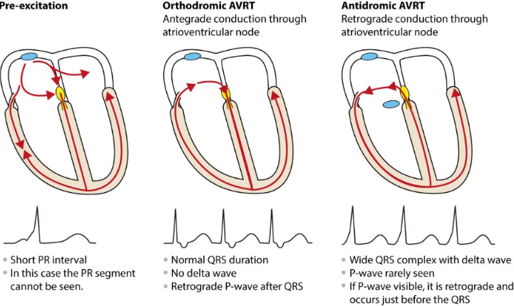
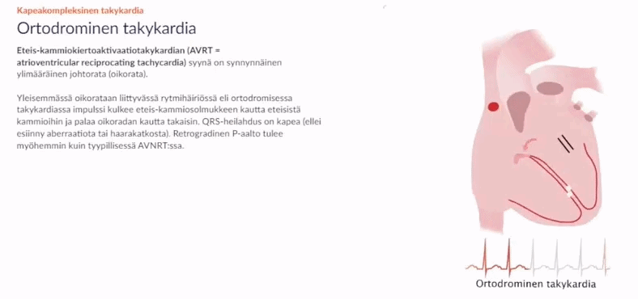
6.1.21 57-vuotias mies, jolle tehty ohitusleikkaus 3vk sitten. Nyt ensiapuun hartiaan säteilevät ja hengitykseen liittyvän rintakivun vuoksi. Potilaalla lämpöä 37.5, CRP 34, Leuk 10.3, TnT 6, RR 156/89, pulssi 87. Auskultoiden hankausääni. EKG:ssä kauttaaltaan hivenen ST-nousuja, PR-väli madaltunut. Mikä diagnoosi on todennäköisin?
- myokardiitti
- perikardiitti
- STEMI
- UAP
- aortan dissekaatio
- keuhkoembolia
bNoin 10–30 %:lle potilaista kehittyy postperikardiotomiaoireyhtymä muutaman viikon sisällä (tyypillisin juuri 3vk jälkeen) sydänleikkauksesta. Siihen kuuluu lievä kuumeilu, lievästi kohonnut CRP/leukosyytit ja perikardiitti.
Hengitykseen liittyvä (pleuriittinen) ja hartiaan säteilevä rintakipu (ei aina säteile) on tyypillinen perikardiitin oire. Sydämen hankausääni (pericardial friction rub) on myös todella tyypillinen sydänpussitulehdukselle.
EKG:ssa tyypillisiä löydöksiä ovat varsinkin laaja-alaiset ST-nousut (ei siis yleensä noudata suonitusalueita, voi joskus olla lokalisoituneempaakin) ja näitä seuraavat T-invertaatiot (joskus voi olla pelkkiä T-muutoksia) ja/tai (varsinkin akuuttivaiheessa) PR-laskut. Yksi suhteellisen sensitiivinen piirre on ns. Spodickin merkki eli alaspäin viettävät TP-segmentit, joka näkyy yleensä parhaiten lateraalisissa rintakytkennöissä ja kytkennässä II. Lievä sinustakykardia on sydänpussitulehduksessa tavallista, mutta muut rytmihäiriöt ja johtumishäiriöt viittaavat sydänlihasvaurioon (myokardiitti).
a: Sydänlihastulehduksessa sydänmerkkiaineet (kuten juuri mitattu TnT) olisivat tyypillisesti selvemmin koholla merkkinä sydänlihassolujen vauriosta.
c ja d: Ohitusleikatulla potilaalla pitää aina muistaa siirteiden tukkeutumisen mahdollisuus, mutta sydäninfarktissa (STEMI) ST-nousut (tai UAP:ssa esim. ST-laskut) rajautuisivat tietylle suonitusalueelle (eivät olisi kauttaaltaan) ja TnT nousisi nopeasti ja merkittävästi (UAP:ssa eivät nousisi). Kipu ei myöskään tyypillisesti liittyisi näin selvästi hengitykseen eikä aiheuttaisi hankausääntä.
e: Aiheuttaisi tyypillisesti repivän, äkillisen ja kovan kivun, joka säteilee usein lapojen väliin. Se ei selitä hankausääntä eikä näitä EKG-muutoksia.
f: Voi aiheuttaa hengitykseen liittyvää rintakipua, mutta se ei selitä sydämen hankausääntä eikä perikardiitille tyypillisiä EKG-muutoksia.6.1.22 85-vuotias mies, jolla kohonnut verenpaine, tupakkataustaa ja uniapnea. Potilas tulee ensiapuun 1vk jatkuneen rasitusrintakivun vuoksi. Kipu tuntuu vas. puolella rintakehää ja heijastuu kaulalle. Kipu rajoittaa kävelyä siten, että alkuun pystynyt kävelemään 1km, kunnes kipu ilmaantui. Nyt viimepäivinä kipu tulee jo 10m kävelyssä ja kertaalleen myös levossa. Statuksessa todetaan virkeä ja hyväkuntoinen potilas. RR 120/60, p 86, spO2 94%, TnT 8, kontrolloituna 3h kohdalla 9, probnp norm. EKG:ssa sinusrytmi, ei iskeemisiä muutoksia. Mikä seuraavista on oikein?
- aloitetaan ASA, statiini ja tehdään lähtete 1-7pv kiireellisyydellä rasituskokeeseen
- aloitetaan ASA, statiini ja tehdään lähtete 1-7pv kiireellisyydellä sepelvaltimoiden angiografiaan
- aloitetaan ASA, statiini ja tehdään lähtete 8-30pv kiireellisyydellä sepelvaltimoiden tietokonekuvaukseen
- aloitetaan ASA, statiini, enoksapariini ja otetaan potilas sairaalaan osastolle odottamaan angiografiaa
- aloitetaan PPI-lääkitys ja kontrolloidaan vointi 2pv kuluttua soittoajalla
dPotilaan oirekuva viittaa vahvasti epästabiiliin rintakipuun (UAP, Unstable Angina Pectoris), joka on akuutti sepelvaltimo-oireyhtymä (ACS). Potilaalla oli aikaisemmin pelkkää rasitusrintakipua, mutta nyt tilanne on pahentunut ja oireita on ilmentynyt myös levossa ja hyvin pienessä rasituksessa -> ei enää ole kyse stabiilista taudista. Koska sydänmerkkiaineet (TnT 8 ja 9 ng/l) ovat normaalit, niin sydäninfarktia ja varsinaista sydänlihasvauriota ei ole vielä kehittynyt. UAP:n ja NSTEMIN:n hoitolinjan kuitenkin ovat pääpiirteittäin aika samanlaiset.
Epästabiili rintakipu on suuren riskin tilanne, joka vaatii päivystyksellistä sisäänottoa sairaalaan. Hoitoon kuuluu antitromboottisen lääkityksen (kuten ASA:n (ensimmäinen annos 250 mg pureskellen, jatkossa 100 mg x 1) ja enoksapariinin (iän ja painon mukaan annostelu s.c. ja voidaan lopettaa PCI:n jälkeen yleensä) eli LMWH:n) sekä statiinin aloittaminen, ja potilaalle järjestetään kajoava sepelvaltimoiden varjoainekuvaus (angiografia) sairaalahoidon aikana (yleensä 24–72 tunnin kuluessa). Hoito siis eroaa STEMI:stä siten, että angiografialla ei ole ihan yhtä kovaa kiirettä ja tyypillisesti ei anneta ADP-reseptorin salpaajaa ennen angiota (annetaan vain, jos varjoainekuvausta ei ole mahdollista järjestää 24 tunnin kuluessa sairaalaan tulosta). Tosin ADP-salpaajaa ei tosin myöskään anneta edes STEMI:ssä esim. TYKS:ssä ennen angiosaliin pääsyä; toimintamallit eroavat sairaaloittain ja hoitoalueittain.
a, b, c: Koska potilaalla on levossa tuntuvaa ja nopeasti edennyttä rintakipua, häntä ei saa lähettää kotiin. Rasituskoe on epästabiilissa tilanteessa jopa vasta-aiheinen, koska se voi laukaista laajan infarktin tai vaarallisen rytmihäiriön
d: Vaikka rintakivun erotusdiagnostiikassa on aina pidettävä mielessä ruokatorviperäiset vaivat, pelkän happosalpaajan aloittaminen ja kotiuttaminen näin tyypillisillä ja vakavilla kardiologisilla oireilla olisi potilaalle hengenvaarallista
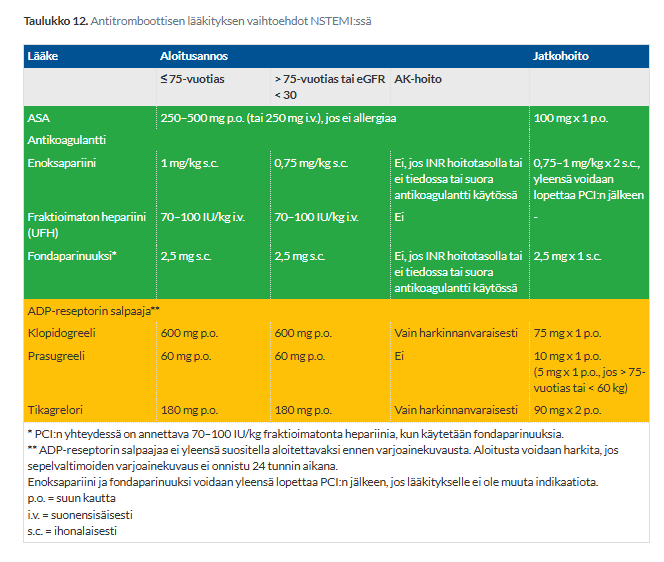
6.1.23 Keuhkoemboliapotilaan riskinarvion kannalta on tärkeää selvittää
- onko potilaan lähisukulaisilla maligniteetteja?
- onko sydämen oikean puolen kuormitusta?
- onko potilaalla aiempia tukoksia?
- onko potilaalla samanaikainen SLT?
bKE:n hoitolinja valitaan kliinisen kuvan ja kuolemanriskin perusteella. Kuolemanriskin arviointiin voidaan käyttää esimerkiksi PESI- tai sPESI-luokitusta (vaihtoehtoisesti HESTIA-kriteerejä) sekä kuolemanriskitaulukkoa (kuvat alla).
Oikean kammion kuormitus keuhkoembolian yhteydessä johtuu embolian aiheuttamasta keuhkovaltimoston paineen noususta. Ensisijainen tutkimus rasituksen osoittamiseksi on yleensä sydämen kaikukuvaus (UKG) tai keuhkoembolia-TT (nähdään esim. että oikean kammion poikkimitta on vasenta kookkaampi ja septum devioi vasemmalle), joka muutenkin voidaan tehdä ensisijaisena keuhkoembolian diagnostisena testinä. Henkeä uhkaavassa tilanteessa päätös trombolyysihoidosta voidaan periaatteessa tehdä pelkän sydämen kaikukuvauslöydöksen perusteella ilman TT-kuvantamistakin, jos oireet ovat tyypillisiä ja KE:n kliininen ennakkotodennäköisyys on suuri.
UKG:ssa yksi tyypillisimmistä löydöksistä on se, oikean kammion paine ja tilavuus suurenevat ja oikea kammio litistää vasenta kammiota estäen sen täyttymistä. Tällöin normaalisti pyöreä vasemman kammion poikkileikkaus muuttuu D-kirjaimen muotoiseksi (Di-sign; nähdään PSAX-ikkunassa)
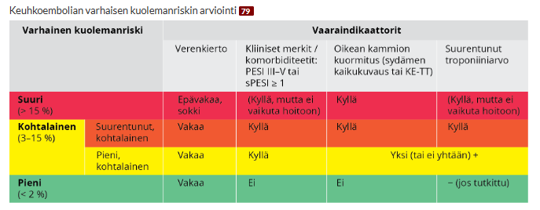
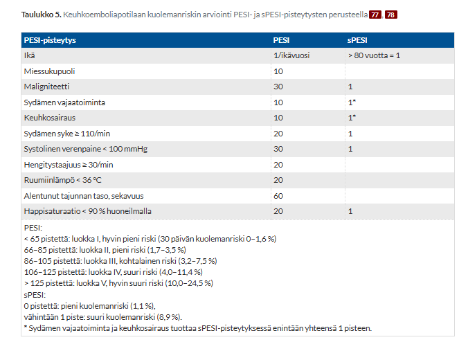
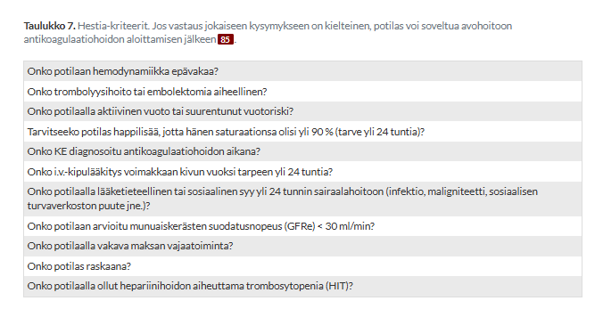
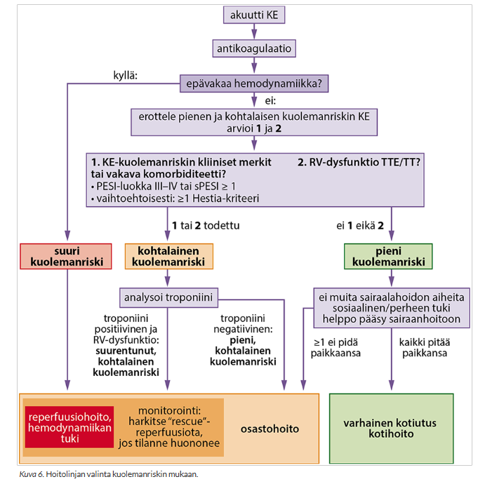
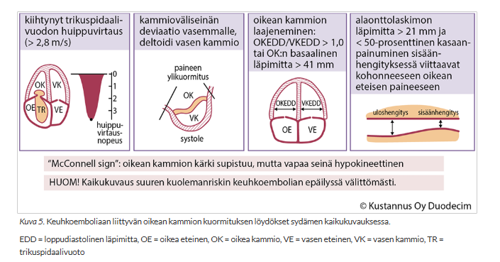
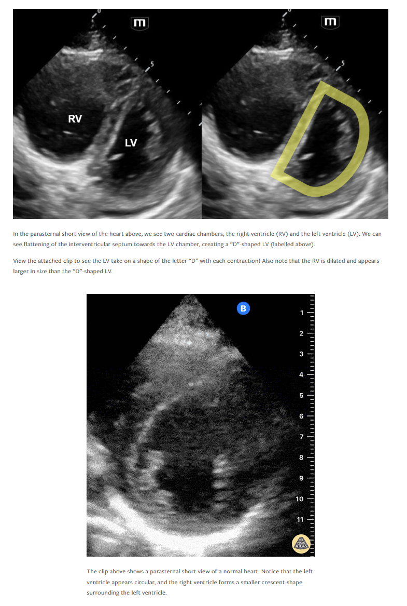
6.1.24 70v henkilö, jolla ei lääkityksiä tai diagnooseja entuudestaan saa rintakipukohtauksen, joka kestää 1h. Kipu ohittuu nitrolla. EKG:ssä V1-4 3mm syvät invertaatiot. Päivystyksessä potilas on kivuton, RR 142/60 mmHg, pulssi 80. Hb 156, Leuk 9, Krea 99, CRP 16, TnT 16 ja kontrolloituna 3h kohdalla 96. Mikä seuraavista on oikea lääkitys potilaalle?
- ASA 250mg po, jonka jälkeen rivaroksabaani 20mg x 1
- ASA 250mg po ja enoksapariini painon mukaan s.c.
- ASA 250mg po, enoksapariini 40mg i.v. ja tikagrelori 180mg po
- ASA 250mg po, Plavix 600 lataus, jonka jälkeen jatko 75mg x 1
bPotilaalla on NSTEMI, koska TnT on noussut ja osoittaa nousemista kontrolloituna. EKG:n T-aaltojen invertaatiot etuseinäkytkennöissä sopivat myös tähän, samoin kuten potilaan oirekuva. Akuutin NSTEMI:n hoitoon kuuluu välittömästi latausannos ASA:a (250 mg suun kautta; yleensä pureskellen) sekä antikoagulaatiohoidon aloitus, johon käytetään ensisijaisesti pienimolekyylistä hepariinia (LMWH, kuten enoksapariinia) painon ja iän mukaan ihonalaisesti annosteltuna.
a: Rivaroksabaani on suora suun kautta otettava antikoagulantti (DOAC, NOAC). Niitä käytetään pääasiassa eteisvärinän tai laskimotukosten hoitoon, mutta niillä ei ole roolia pelkän akuutin sydäninfarktin ensivaiheen antitromboottisessa hoidossa päivystyksessä. Ne kuitenkin on osattava ottaa huomioon, jos potilaalla on jo käytössä DOAC tai varfariini, sillä jos NSTEMI- tai UAP-potilaalla on käytössä oraalinen antikoagulantti, parenteraalista antikoagulanttia ei anneta ennen varjoainekuvausta. PCI:n yhteydessä antikoagulanttia käyttäville potilaille on kuitenkin annettava joko enoksapariinia tai hepariinia suonensisäisesti.
c: Enoksapariinin 40mg iv-bolusta käytetään yleensä STEMI:ssä. Samoin ADP-salpaaja tikagrelori (Brilique) 180mg po kuuluu STEMI:n hoitoon; paikallisten ohjeiden mukaan mahdolllisesti jo ennen angiosalia/vasta angiosalissa
d: Plavixia eli klopidogreelia käytetään usein jatkohoidossa (kaksois- (ASA+klopidogreeli eli DAPT)/kolmoishoito (ASA+klopidogreeli+antikoagulantti), mutta akuutissa vaiheessa ennen reperfuusiota sen teho voi jäädä puutteellisiksi noin 1/5 potilaista (sen metaboliitti on lääkkeen aktiivinen toimija -> hitailla metaboloijilla vaikutus huono) -> ei suosita akuutissa antitromboottisessa hoidossa (tikagrelori on yleisempi).
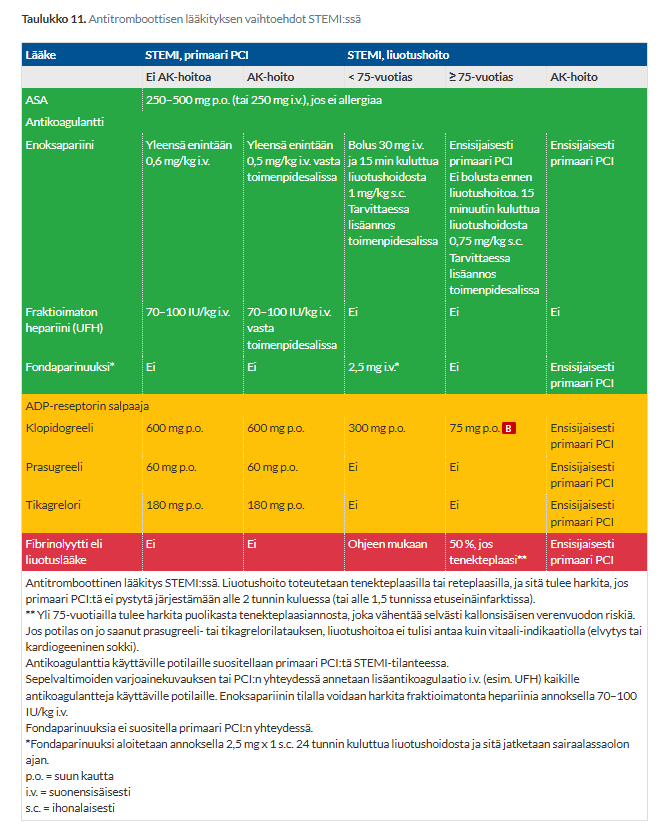
6.1.25 37-vuotias tupakoiva henkilö, jolla verenpainelääkitys, sairastaa ylähengitystieinfektion, jonka jälkeen hänelle ilmaantui rintakipua. RR 147/60, spO2 97%, PVK, Na, K, Krea viitealueella, TnT 570, probnp 360. EKG:ssä ST-taso koholla V1-V6, I, II, III, aVL, aVF. Mihin diagnoosi sopisi parhaiten?
- myokardiitti
- akuutti sepelvaltimotautioireyhtymä
- varhainen repolarisaatio
- tyypin 2 sydäninfarkti
aNuorehko potilas, jolla rintakipu alkaa pian ylähengitystieinfektion jälkeen -> tyypillinen tausta myokardiitille. Merkittävä TnT-nousu viittaa, että on suoraa sydänlihasvauriota, mikä erottaa tilanteen pelkästä perikardiitista (potilaalla kyllä voi olla myoperikardiitti). Myös lievästi kohonnut proBNP (360) sopii sydänlihaksen kuormitukseen tulehdustilassa. Laaja-alaiset EKG-muutokset myös ovat tyypillisiä myo(peri)kardiitille.
b: EKG-muutokset ovat laaja-alaisia eivätkä noudata tiettyä suonitusaluetta -> ei ole kyseessä sepelvaltimotautioireyhtymä
c: Varhainen repolarisaatio on hyvänlaatuinen EKG-ilmiö, johon voi liittyä ST-nousuja (J-pisteen nousun kautta) nuorilla ihmisillä. Se on kuitenkin pysyvä ilmiö, eikä se aiheuta rintakipua, näin rajua troponiinin nousua (TnT 570) tai proBNP:n kohoamista.
d: Tässä infarktityypissä kyse on hapensaannin ja -kulutuksen epätasapainosta ilman akuuttia sepelvaltimotukosta (esim. vaikean anemian, sepsiksen, hypoksian tai rytmihäiriön vuoksi; tyypin 1 MI viittaisi taas tyypilliseen tromboosin aiheuttamaan tukokseen ja sitä kautta infarktiin). Potilaan peruselintoiminnot (kuten hemoglobiini ja happisaturaatio) ovat kuitenkin viitealueella, eikä mikään viittaa sellaiseen yleistilaa kuormittavaan kriisiin, joka selittäisi näin massiivisen sydänlihasvaurion tyypin 2 mekanismilla.
6.1.26 Potilaalle tehty kroonisen sepelvaltimotaudin vuoksi pallolaajennus vasempaan eteen laskevaan haaraan ja oikeaan sepelvaltimoon. Ruokavalio on terveellinen ja lääkkeenä rosuvastatiini 40mg x 1. 12kk kontrollissa kokonaiskolesteroli on 3.7 mmol/l ja LDL 1.8 mmol/l. Miten jatkan?
- jatkan nykyistä lääkitystä
- aloitan rosuvastatiinin lisäksi etsetimibin 10mg 1 x vrk
- aloitan rosuvastatiinin lisäksi PCSK9-estolääkityksen
- vaihdan rosuvastatiinin tilalle simvastatiinin 80mg/vrk
bLDL-tavoite on alle 1.4 mmol/l erityisen suuren riskin potilailla ja tähän ryhmään juuri kuuluu mm. sepelvaltimotautia sairastavat (sairastettu sydäninfarkti, suoritettu revaskularisaatio tai valtimotauti, joka on varmennettu kuvantamistutkimuksilla). Potilaan lääkitystä siis tulee tehostaa tavoitteen saavuttamiseksi.
Potilaalla on jo käytössään tehokas statiini korkealla annokselle. Kaksi tehokkainta ja nykyään yleisimmin käytettyä statiinia ovat atorvastatiini ja rosuvastatiini. Potilaalla on jo käytössään rosuvastatiini sen maksimiannoksella eli 40mg (atorvastatiinissa maksimi on 80mg). Ensisijainen tehostava lääkitys annosnoston jälkeen on estetimibi, jonka suositeltu annos on yksi 10 mg:n tabletti päivässä.
Jos etsetimibilläkään ei saavuteta LDL-tavoitetta, niin voidaan tehostaa hoitoa edelleen aloittamalla PCSK9:n toimintaan vaikuttava lääke (PCSK9-estäjä tai inklisiraani). PCKS9-estäjät ovat tehokkaita, mutta kalliita ja niiden korvattavuudelle on tarkat kriteerit, joten niitä ei yleensä voi käyttää ennen kuin statiini+etsetimibi on todettu olevan liian heikko hoito tai ne eivät sovi potilaalle.
Hyperlipidemian hoito pähkinänkuoressa on siis:
d: Simvastatiinin maksimiannos periaatteessa on 80mg/vrk, mutta yli 40 mg:n simvastatiiniannosta suositellaan vain potilaille, jotka ovat jo käyttäneet sitä ilman haittoja (korkeampi riski lihashaitoille). Simvastatiinin teho on myös atorvastatiinia ja rosuvastatiinia hieman heikompi, joten sitä ei enää suosita kovinkaan paljoa. Simvastatiinin kanssa tulee myös olla tarkempi munuaisfunktion kanssa, koska se kertyy helpommin munuaisten vajaatoiminnassa ja sen annosta tulee redusoida, kun GFR <30 (vrt. atorvastastiini, jonka kanssa redusointia ei tarvitse; rosuvastatiinin kanssa tulee myös olla munuaisfunktion suhteen tarkka).
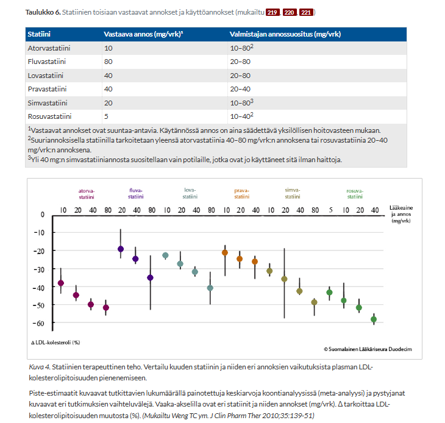
6.1.27 Mikä kuvaa parhaiten tilannetta, jolloin aorttaläppäahtauman katetri- tai leikkaushoitoa tulee harkita?
- potilaalle ilmaantuu vaikeasta aorttaläppäahtaumasta johtuva rasitushengenahdistusoireisto riippumatta vasemman kammion ejektiofraktiosta
- potilaalle ilmaantuu vaikeasta läppäahtaumasta johtuva rasitushengenahdistusoireisto ja vasemman kammion ejektiofraktio on alentunut
- vaikeaa läppäahtaumaa sairastavalla potilaalla ei ole oireita ja vasemman kammion ejektiofraktio on normaali, mutta vasen kammio on hypertrofinen
- potilaalle ilmaantuu rasitushengenahdistusoireisto ja todetaan kohtalaisen vaikea-asteinen läppävika
aOireetonta aorttaläppäahtaumaa sairastavaa potilasta on seurattava säännöllisesti, sillä ahtauma on etenevä sairaus.
Yleensä tekoläpän asennus on aiheellinen vaikea-asteisessa stenoosissa heti oireiden ilmaannuttua, mutta toimenpide voi olla indikoitua oireettomallakin potilaalla, jos ejektiofraktio on < 50 % tai rasituskoe on poikkeava (todetaan oireita, selvästi odotettua huonompi suorituskyky tai verenpaine laskee alle lähtötason). Jos pienen toimenpideriskin potilailla oireettoman stenoosin hoitoa voidaan myös harkita, jos esim: 1) stenoosisuihkun huippuvirtaus on > 5.0 m/s, 2) natriureettisen peptidin (NTproBNP) pitoisuus on kontrolloidusti voimakkaasti kohonnut, 3) läppä on vahvasti kalkkeutunut ja on viitteet stenoosin nopeasta etenemisestä (nopeushuippu > 4 m/s ja kasvuvauhti seurannassa > 0,3 m/s/vuosi), 4) Vasemman kammion ejektiofraktio on < 55% läppävian takia. Tekoläppäleikkausta voidaan myös harkita tehtävän oireettomalla potilaalla, jos potilaalle ollaan tekemässä jokin muu sydänleikkaus tai aortan korjausleikkaus muutenkin -> tehdään samalla reissulla.
Aorttastenoosin vaikeusasteen gradeerauksessa käytetään muutamia ultraäänellä mitattavia arvoja, joista tärkeimmät ovat aorttaläpän avautumispinta-ala (AVA), keskigradientti aorttaläpän yli ja aorttavirtauksen huippunopeus.
Aorttastenoosin hoito on ensisijaisesti tekoläpän asennus joko sitten leikkauksella (SAVR = Surgical Aortic Valve Replacement) tai katetriteitse. Perkutaaninen aorttaläppäproteesin asennus katetriteitse eli TAVI (Transcatheter Aortic Valve Implantation = TAVR = Transcatheter Aortic Valve Replacement) on nykyään yleensä ensisijainen hoitokeino iäkkäiden (>75v) potilaiden hoidossa ja menetelmän käyttö lisääntyy myös 65–75-vuotiailla ja sitäkin nuoremmilla aorttastenoosipotilailla. Toimenpiteessä viedään yleensä reisivaltimon kautta uusi biologinen tekoläppä ahtautuneen aorttaläpän paikalle.
b: Ei tarvitse olla molempia; pelkät oireet jo voivat olla indikaatio toimenpiteelle
c: Jos potilas on täysin oireeton ja ejektiofraktio on normaali, pelkkä vasemman kammion hypertrofia (seinämän paksuuntuminen, joka on sydämen luonnollinen kompensointimekanismi painekuormitukselle) ei yleensä yksinään riitä hoidon indikaatioksi. Potilasta seurataan kylläkin, jos on muuten toimenpidekandidaatti.
d: Toimenpiteelliset hoidot ovat yleensä indikoituja vasta vaikea-asteisessa ahtaumassa (joskus kohtalaisessakin, jos ei ole muuta selittävää oireille tai sydämen vajaatoiminnalle tai tehdään muutenkin sydänleikkaus)
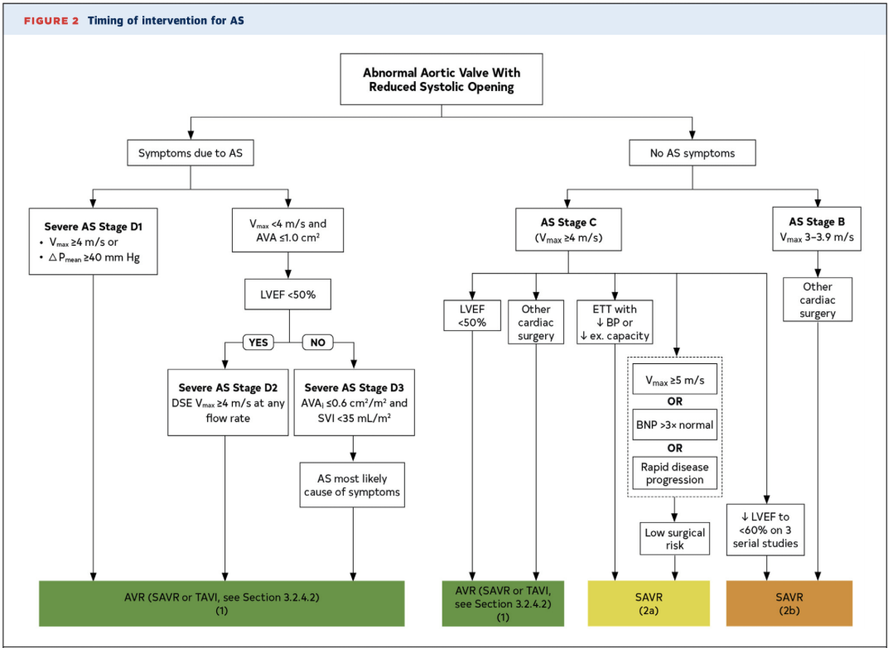
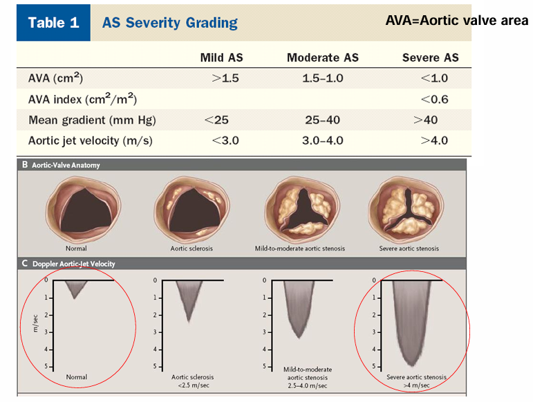
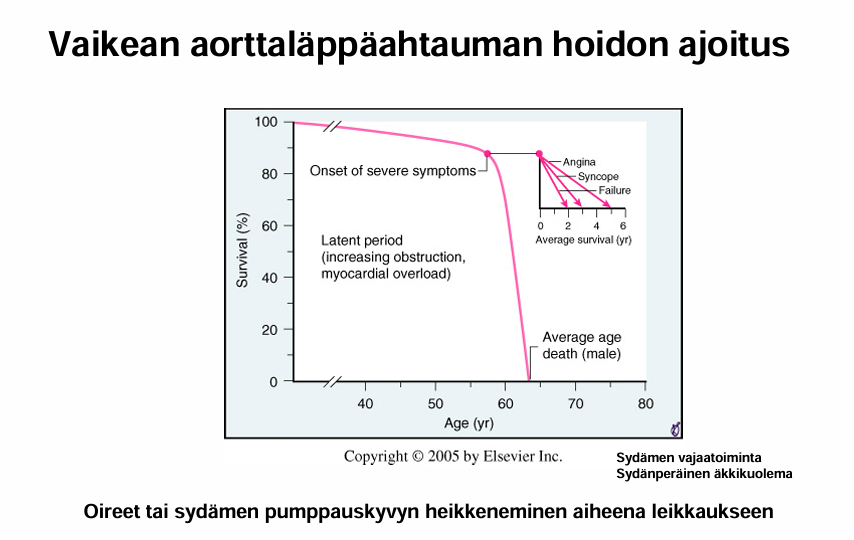
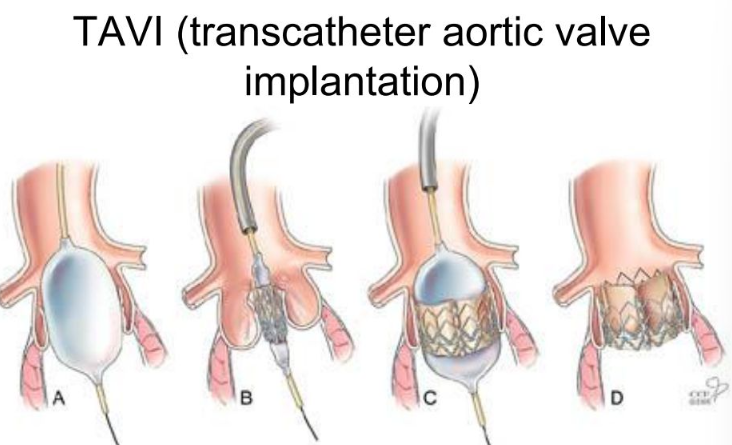
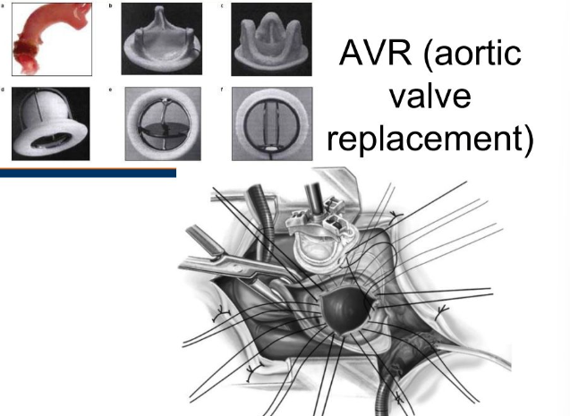
6.1.28 67-vuotias mies, jonka vastaanotolla mitattu verenpaine on 170/88 mmHg ja kotona mitattu verenpaine on elintapahoitojen jälkeen 152/70 mmHg. Sydänfilmissä on LVH Sokolow-Lyonin kriteerein. Minkä lääkkeen aloitat potilaalle?
- betasalpaaja
- ACE-estäjä + tiatsididiureetti
- kalsiumkanavasalpaaja
- tiatsididiureetti
bPotilaan kotiverenpaine (152/70 mmHg) on elintapahoitojen jälkeenkin selvästi koholla. Yleisen ohjeen mukaan jos potilaan verenpaine on huomattavasti kohonnut (kotimittauksissa > 145/90mmHg), kannattaa aloittaa suoraan yhdistelmähoidolla.
Potilaalla on myös jo hypertension aiheuttama kohde-elinvaurio eli vasemman kammion hypertrofia (LVH), joka on todettu EKG:ssa (Sokolow-Lyonin kriteeri: SV1 + (RV5 tai RV6) > 35mm; riippuen lähteestä Sokolow-Lyonin kriteereihin voidaan lukea myös V2 mukaan eli RV5-6 + SV1-2 on yli 35mm). LVH)on yleisin kohonneen verenpaineen aiheuttama elinmuutos (hypertensiossa sitä esiintyy 2–5-kertaisesti normotensioon verrattuna). Sydämen kaikututkimus on EKG:tä herkempi LVH:n diagnostiikassa ja se tulee tehdä erityisesti silloin, jos EKG ei vasemman haarakatkoksen tai muun merkittävän QRS-poikkeaman johdosta sovellu LVH:n arviointiin tai jos kaikututkimuksen tekemiseen on lisäaiheita, kuten epäily sydämen systolisesta tai diastolisesta vajaatoiminnasta, epäily merkittävästä läppäviasta tai aiemmin tutkimaton eteisvärinä tai muu merkittävä rytmihäiriö.
LVH:n yhteydessä parhaimpia verenpainelääkkeitä ovat RAAS-estäjät, kuten ACE-estäjät ja ATR-salpaajat; ne ovat yleisestikin hyviä sydämen remodellaation vähentämisessä.
a: Beetasalpaajat monoterapiana eivät ylensä ole kohonneen verenpaineen ensilinjan lääkkeitä, ellei potilaalla ole muuta kardiologista syytä niiden käyttöön (kuten sepelvaltimotauti, sydämen vajaatoiminta tai tietty rytmihäiriöalttius).
c ja d: Monoterapiat eivät potilaan painetasot huomioiden yleisesti ole nyt parhaimpia, koska ne todennäköisesti olisivat riittämättömiä. Lisäksi potilas hyötyy ACE-estäjästä elinvaurionsa takia.

6.1.29 Verenpainekontrolliin tulee 56-vuotias nainen, jolla lääkkeenä on angiotensiinireseptorinsalpaaja-tiatsididiureetti-yhdistelmä (valsartaani 160mg/hydroklooritiatsidi 12,5mg x 1). Kotona mitattu verenpaine on 130-68 mmHg. Ei elinvaurioita. Mitä teet?
- lisäät lääkitykseen kalsiumkanavasalpaajan (amlodipiini 5mg x 1)
- lisäät lääkitykseen beetasalpaajan (bisoprololi 5mg x 1)
- sovit kontrollin 3kk päähän
- sovit kontrollin vuoden päähän
dPotilaan hoitotavoite on saavutettu; verenpainehoidon tavoite vaihtelee eri potilasryhmien välillä, mutta matalan riskin potilailla vähimmäishoitotavoite on < 140/90 mmHg vastaanottomittausten perusteella tai< 135/85 mmHg kotimittausten perusteella. Ei ole syytä potilastehtävän mukaan epäillä, että potilaalla olisi todella tiukkaa esim. kotipaineet <125/80 tavoitetta (tämä jos tautiriski on suuri (kardiovaskulaarisairaus tai oireettomilla > 10 %:n riski FINRISKI-laskurilla; myös kroonista munuaistautia sairastavalla potilaalla ja tapauksissa, joissa diabeettiseen tai ei-diabeettiseen munuaistautiin liittyy albuminuria).
Vaikka hoitotavoite on saavutettu, niin seurantaa on vielä jatkettava. Kun verenpaine on tavoitetasolla, seurantakäyntien tiheys suunnitellaan potilaskohtaisesti lääkityksen, kohde-elinvaurioiden ja muiden sairauksien mukaan. Osasta yhteydenotoista voi vastata sairaanhoitaja tai terveydenhoitaja, jos työnjaosta on niin sovittu. Myös puhelinkontakteja ja sähköistä asiointia voidaan hyödyntää hoitotavoitteessa olevien potilaiden seurannassa. Kohonneen verenpaineen kohde-elinvaurioiden ja muiden valtimotautien riskitekijöiden kartoitus on suositeltavaa tehdä ainakin kahden vuoden välein. Mekaaninen reseptien uusiminen ilman tilannearviota ei ole hyväksyttävä käytäntö.
a ja b: Lääkityksen lisääminen on tarpeetonta ja jopa haitallista, koska verenpaine on jo saavuttanut tavoitteensa. Turha lääkityksen lisääminen altistaisi potilaan liialliselle verenpaineen laskulle ja tarpeettomille haittavaikutuksille.
c: Tiheämpi seuranta on tarpeen silloin, kun lääkitystä on juuri muutettu tai aloitettu, tai jos verenpaine ei ole hoitotavoitteessa.6.1.31 Vastaanotolle tulee 80-vuotias nainen, jolla on ollut verenpainetauti 25v ajan. Verenpaineiden keskiarvo kotimittauksissa on 128/74 mmHg ja vointi on hyvä. Verenpainelääkityksenä on losartaani 100mg x 1, amlodipiini 10mg x 1 ja ramipriili 10mg x1. Mitä teet potilaan verenpainelääkitykselle?
- jatkan nykyisellä lääkityksellä
- lopetan amlodipiinin
- lisään lääkitykseen hydroklooritiatsidin
- lopetan ramipriili
d6.1.32 Varfariini, mikä pitää paikkansa?
- parasetamoli sopii tulehduskipulääkkeitä paremmin varfariinihoitoisen potilaan kipulääkkeeksi
- tramadoli ei lisää varfariinihoitoisella potilaalla verenvuotovaaraa
- sitalopraami ei lisää varfariinihoitoisella potilaalla verenvuotovaaraa
- karbamatsepiini lisää varfariinihoitoisella potilaalla verenvuotovaaraa
aVarfariini on vanha antikoagulantti. NSAIDit estävät verihiutaleiden toimintaa ja siten lisäävät varsinkin jo käytössä olevan AK-hoidon kanssa vuotoriskiä merkittävästi. Varsinkin mahahaavojen ja vuotojen riski on merkittävä, koska NSAIDit myös ärsyttävät mahan limakalvoa. Vähäisen vuotoriskin takia parasetamoli on paljon parempi vaihtoehto kuin NSAIDit. Kannattaa kuitenkin tiedostaa, että jatkuva yli 2 gramman vuorokausiannoksen parasetamolin käyttö voi jonkin verran tehostaa varfariinin vaikutusta (parasetamoli estää hyytymistekijöiden tuottoon tarvittavia K-vitamiinisyklin entsyymejä).
b: Tramadoli muuttaa varfariinin metaboliaa ja voi nostaa INR-arvoa merkittävästi. Tramadolilla on itsessäänkin vuotoriskiä nostava vaikutus sen SNRI-vaikutuksen (serotoniinin takaisinoton esto myös verihiutaleissa) takia.
c: SSRI-lääkkeet estävät serotoniinin takaisinottoa myös verihiutaleissa, mikä heikentää verihiutaleiden kykyä aggregoitua. Siksi sitalopraami lisää verenvuotovaaraa varfariinihoidon aikana, vaikka se ei suoraan muuttaisikaan INR-arvoa.
d: Karbamatsepiini on voimakas CYP-entsyymien (erityisesti CYP3A4 ja CYP2C9) indusoija eli kiihdyttäjä. Se tehostaa varfariinin hajoamista maksassa (päämetaboliareitti on CYP2C9), jolloin varfariinin teho heikkenee ja INR-arvo laskee. Tämä lisää tukosvaaraa, ei verenvuotovaaraa.6.1.33 Mikä seuraavista on tärkein lääke potilaalle, jolla on alentunut ejektiofraktio ja NYHA II-tasoinen sydämen vajaatoimintaoireisto?
- diureetti
- aldosteronin estäjä
- ACE-estäjä
- nitraatti
cSydämen vajaatoiminnan ennustelääkkeet (ennustetta parantavat lääkkeet) on tärkeä kapitteli hallita.
Sydämen vajaatoiminta jaetaan ejektiofraktion mukaan: HFrEF (heart failure with reduced ejection fraction = EF 40% tai alle), HFmrEF (heart failure with mildly reduced ejection fraction = EF 41-49%), HFpEF (heart failure with preserved ejection fraction, EF = 50% tai enemmän). Tässä todennäköisesti potilaan alentuneella ejektiofraktiolla tarkoitetaan jo HFrEF-tasoista sydämen vajaatoimintaa.
HFrEF:n ennustelääkkeet, jotka tulisi mahdollisuuksien mukaan (haittavaikutukset ja vasta-aiheet huomioiden) aloittaa kaikille ovat
- ATR-salpaajilla ei ole yhtä hyvää kuolleisuutta vähentävää vaikutusta, jonka takia ACE:n estäjät ovat ensisijaisia, jos potilas sietää ne (ei esim. tule yskää)
- Mahdollisesti jos ACEi tai ATR-salpaajasta huolimatta havaitaan haittaavia oireita, niin voi mahdollisesti kokeilla ARNI-lääkitystä (ARNI = ATR-salpaaja+neprilysiinin estäjä eli valsartaani+sakubritriili; kauppanimellä Entresto). Tulee vain olla varovainen voimakkaan verenpainetta laskevan vaikutuksen takia
Ennustelääkkeistä ei kaikista ole todettu samanlaista hyötyä HFmrEF:n tai HFpEF:n hoidossa. Käytännössä luokan I näyttöä on näiden hoidossa vain SGLT2-inhibiittoreilla. Simppelisti:sanottuna SGLT2i aloitetaan kaikille vajaatoimintapotilaille riippumatta ejektiofraktiosta (aloittamista (jatkaa kyllä saa) ei suositella kun GFR <20-25 (empagliflotsiinilla 20 ja dapagliflotsiinilla 25).
a: Nesteenpoistolääkkeet (kuten furosemidi) ovat välttämättömiä oireiden hoitoon silloin, kun potilaalla on nestekertymiä (kuten turvotuksia tai keuhkorastia). Ne eivät kuitenkaan paranna potilaan ennustetta tai pidennä elinikää.
b: Spironolaktoni tai eplerenoni parantaa myös ennustetta ja kuuluu systolisen vajaatoiminnan perushoitoon. Se kuitenkin aloitetaan perinteisesti vasta muiden ennustelääkkeiden jälkeen rinnalle, jos potilas sietää hoidot. Jos on valittava ACE:n estäjän ja MRA:n välillä, ACEi on ensisijaisempi.
d: Ei ole ennustelääke.
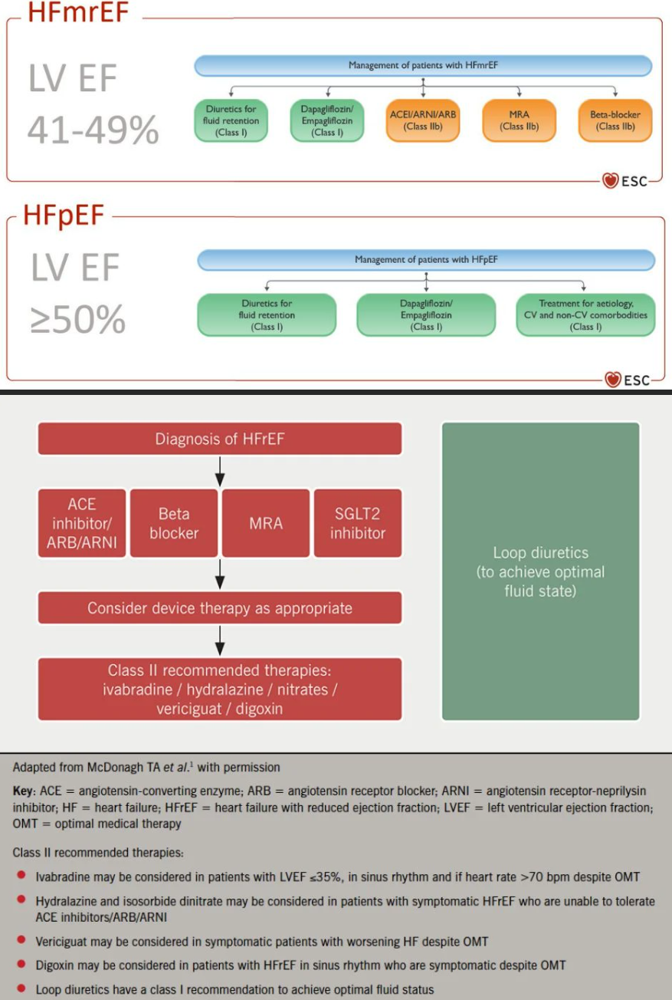
6.1.34 Mikä seuraavista on oikein toiminnallisessa/sekundaarisessa mitraalivuodossa?
- mitraaliläppäliuskat prolapsoituvat
- ensisijainen hoito on lääkehoito
- ensisijainen hoito on leikkaushoito
- sen aiheuttaa tyypillisesti endokardiitti
bMitraalivuoto voidaan jakaa rakenteelliseen (primaariin) ja toiminnalliseen (sekundaariseen) muotoon. Rakenteellinen vuoto johtuu läppäliuskojen, jännerihmojen tai papillaarilihasten rakenneviasta (yleisimmät syyt ovat mitraaliläpän prolapsi (kehittyneissä maissa) ja reumaattinen mitraalivuoto (kehitysmaissa)). Toiminnallinen vuoto taas on seurausta vasemman kammion toimintahäiriöstä tai epänormaalista rakenteesta, joka häiritsee läpän toimintaa; esim. dilatoiva kardiomyopatia.
Oireellisen rakenteellisen mitraalivuodon hoito pääasiassa perustuu läppäleikkaukseen ja oireellisen toiminnallisen hoito sydämen vajaatoimintalääkitykseen (ja mahdollisen sepelvaltimotaudin hoitoon). Toiminnallisen leikkausta(/katetrikorjausta) voidaan harkita oireiden jatkuvan pahemisen (lääkkeistä riippumatta) takia tai muun sydänleikkauksen yhteydessä toteutettavaksi.
Rakenteellisen mitraalivuodon etenemiseen ei voida vaikuttaa lääkehoidolla, eikä lääkehoito ole aiheellinen kroonisessa oireettomassa mitraalivuodossa (vaikka verisuonien laajentajien ja ACE:n estäjien käyttö tuntuisi loogiselta, ei lääkkeiden hyödystä ole näyttöä). Oireetonkin mitraalivuoto voidaan mahdollisesti hoitaa korjausleikkauksella, jos LVEF ≤ 60% tai LV:n systolinen poikkimitta on ≥ 40 mm. LVEF-raja on korkea, koska ejektiofraktio yliarvioi LV:n toimintaa vakavassa MR:ssä, koska vuotovirtaus käsittää suuren osan iskutilavuudesta. Leikkaus tehdään yleensä sternotomiateitse sydän-keuhkokonetta käyttäen, mutta perkutaanisia katetritekniikoita ja muita vaihtoehtoja perinteiselle mitraalivuodon avosydänleikkaukselle kehitetään aktiivisesti.